User manual · Caesar 0.8.32
The purpose of this guide is to help you install Caesar on your computer, become familiar with the desktop, and learn to direct the agent to perform tasks. If you are new to Caesar, read it from the beginning; otherwise, use the contents below to go to a task.
Part one — Installing Caesar
Caesar is a Linux-based operating system. It is not derived from another distribution; every component is compiled from source.
Caesar includes an integrated AI agent. On most operating systems, you open a program and operate it yourself. On Caesar, you can describe a task in plain language; the agent performs the task and displays each action it takes.
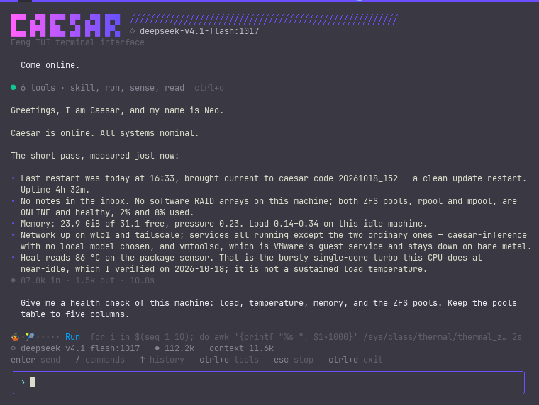
The remainder of this guide builds on this concept.
The following items are required:
An internet connection is not required for installation, but is recommended afterwards.
Caesar is distributed as a single file ending in .iso, named for its
version: caesar-0.8.32.iso, with a .sha256 checksum file beside it
to confirm the download is complete. Download it from modulatio.ai/caesar, with
Download the beta; the page also gives its size and SHA-256 checksum. The same file
supports three methods:
On Linux or macOS, use dd to write the file to a USB flash drive. Replace
sdX with the device name of the flash drive and verify it carefully, because
this operation erases the flash drive:
sudo dd if=caesar-0.8.32.iso of=/dev/sdX bs=4M status=progress conv=fsync
dd writes to the specified
device without confirmation, even if it is your system disk. Run lsblk first
and confirm that the device name refers to the USB flash drive.When the computer starts from the installation media, a live session opens automatically. (The medium's start menu also offers Make Caesar On a Stick, which opens the window described in 2.19 instead.) To start the installer, double-click Install Caesar on the desktop, or press Super+I. No disk has been changed at this point.
The installer works from the keyboard alone: Tab moves between items, the arrow keys choose, and Enter confirms.
The live session runs the same system that is about to be installed, with two differences: it runs from the installation media, so it is slower, and changes made in it are not kept.
The start menu's second entry, Caesar, run from memory, copies the system on the
medium into the computer's memory before the session starts. The USB flash drive or DVD can
then be taken out, and the installer still works without it. This needs as much memory as
the medium's system image plus 4 GB: 8,394 MiB, about 8.8 GB, for
caesar-0.8.32.iso. A computer with less starts from the medium, as the first
entry does, and says so among the boot messages; press Esc on the boot screen to see
them.
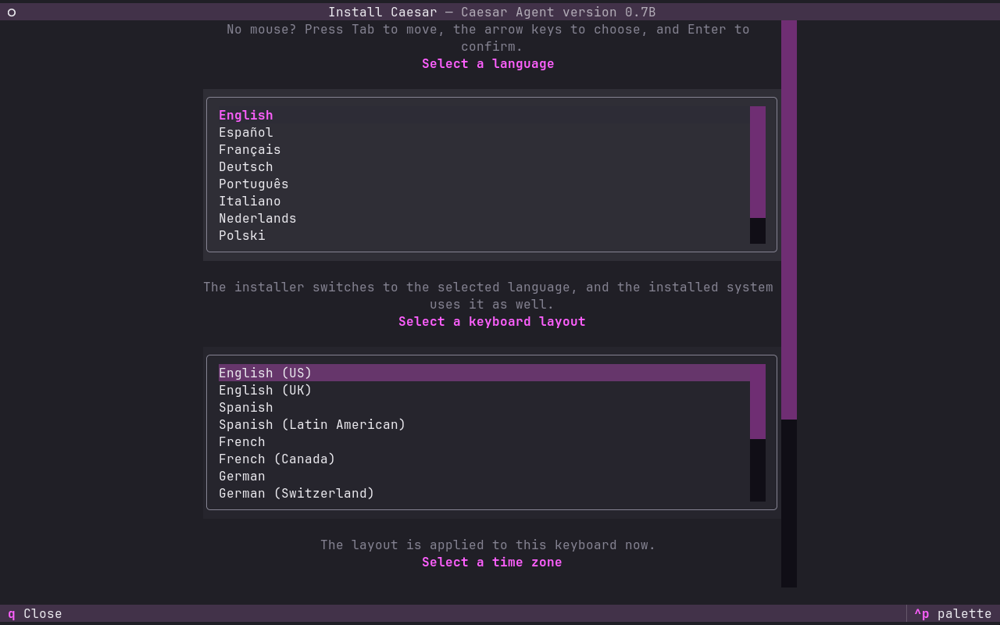
The installer collects a few settings, shows a summary of every change, and does not
write to any disk until you type yes, unless you choose to wipe a disk first.
You can select Back at any point before that.
To install Caesar:
The installer switches to the selected language, and the installed system uses it as well. The keyboard layout is applied immediately, so you can test it in the next field you type into. The time zone sets the clock of the installed system; UTC is selected until you choose another.
Select Next.
The welcome page confirms that no changes are made until you review and confirm the installation summary:
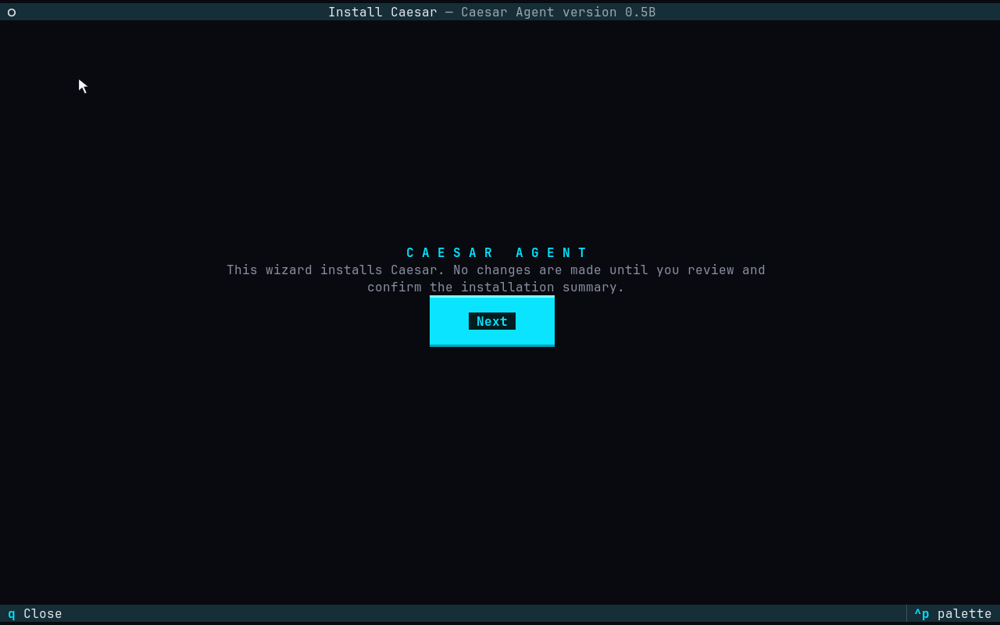
Each suitable disk is listed with its size and device name. The installation media and disks in use are not listed, so the running system cannot be erased by mistake:
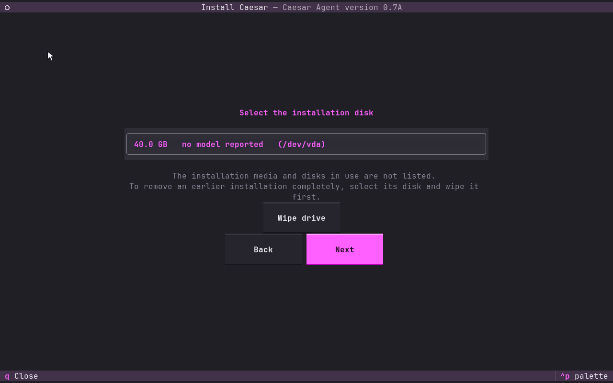
To remove an earlier installation completely, select its disk and then Wipe
drive. Type the disk's name, such as sda, and select Wipe now.
Every partition on the disk and everything in them are erased at once, before the
summary. A disk with anything in use on it is refused.
Three partition layouts are available. The bar below the buttons shows the result before anything is written:
The same page sets the location of the agent memory. By default it is placed on a separate partition of this disk, so it can be kept when the system is reinstalled. On a disk that already holds agent memory, the options are: Keep the existing agent memory, Keep the existing agent memory and reset the agent name, Replace with new agent memory, or Store agent memory with the system.
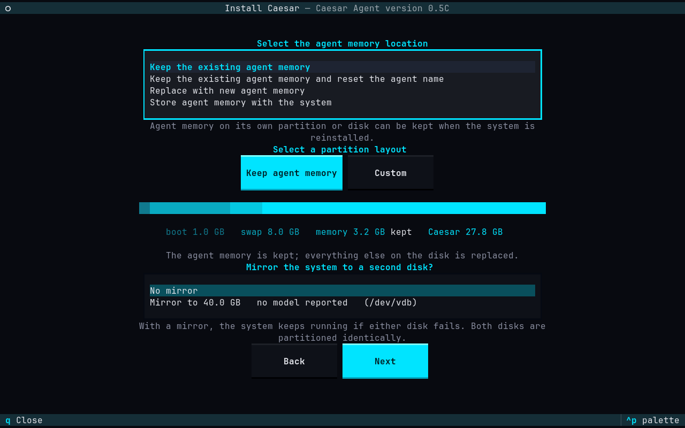
When the computer has a second disk of at least the same size, the page also offers to mirror the system to it. Both disks are partitioned identically, and the system and the agent memory are stored on both, so the system keeps running if either disk fails. Each disk has its own boot entry. A mirror uses both entire disks, so it requires Entire disk, or keeping agent memory that is already mirrored.
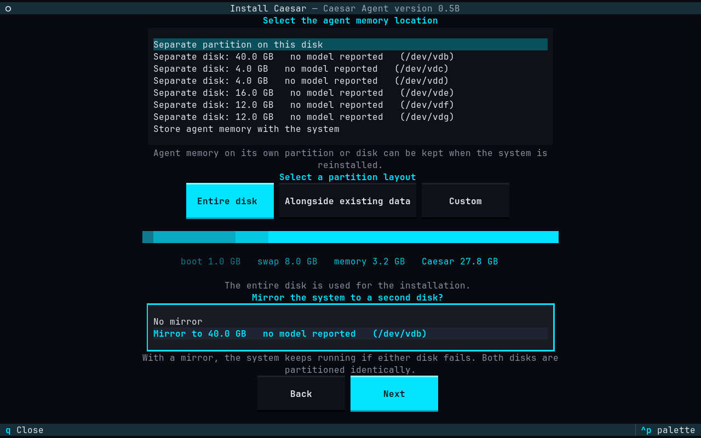
RAID stores data across several drives, so any one drive can fail without
data loss. The page lists the drives that the system does not use. Select two or more
drives of any size, and the page shows the usable capacity of the data volume; select
none to skip. All data on the selected drives is erased. The arrays form one data
volume, mounted at /data. RAID can also be created later in the Disks
window (2.17).
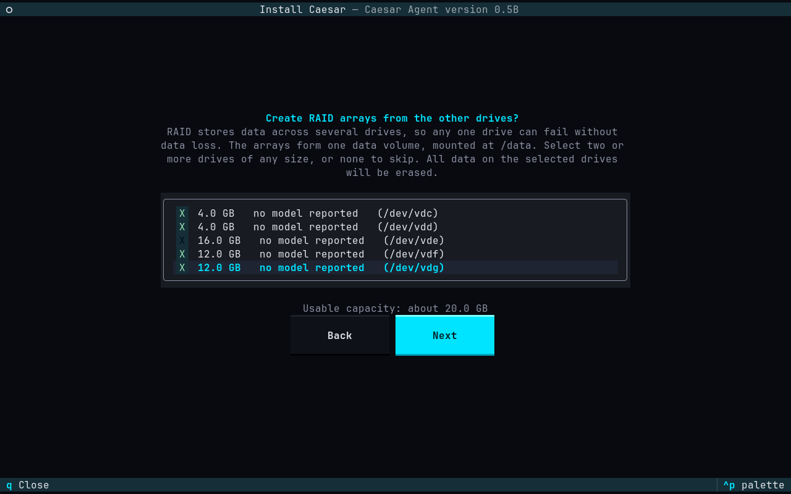
Use lowercase letters, digits and hyphens, starting with a letter. This name identifies the device on the network:
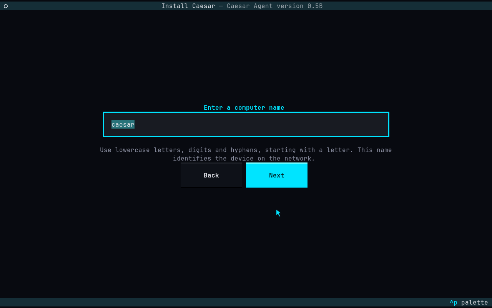
This account signs in to the system and has administrator rights. Enter the password twice. Select Show password to display it:
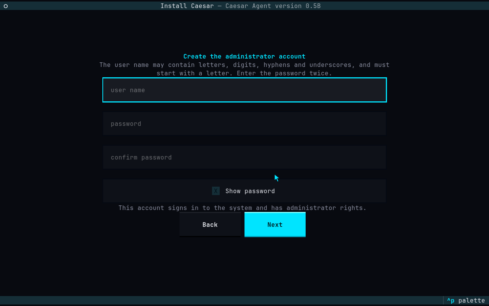
Entries are checked as you type, and the installer does not continue past an error:
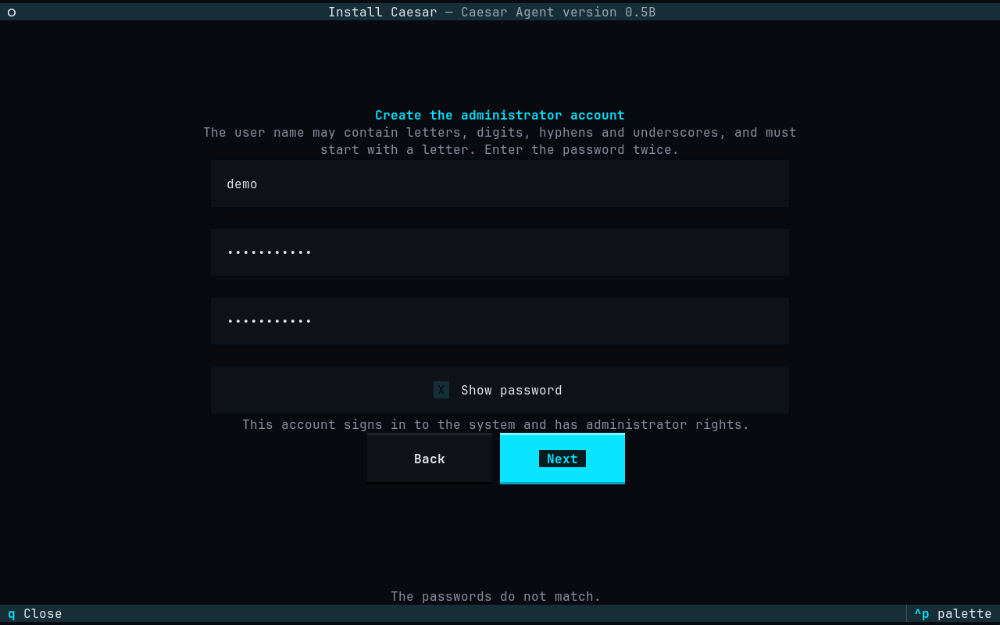
When a network connection is already available, no action is needed and the page says so. Otherwise, select a wireless network on this page. What the agent thinks with is not asked here: it is set up at the first sign-in, in the AI providers window (2.2).
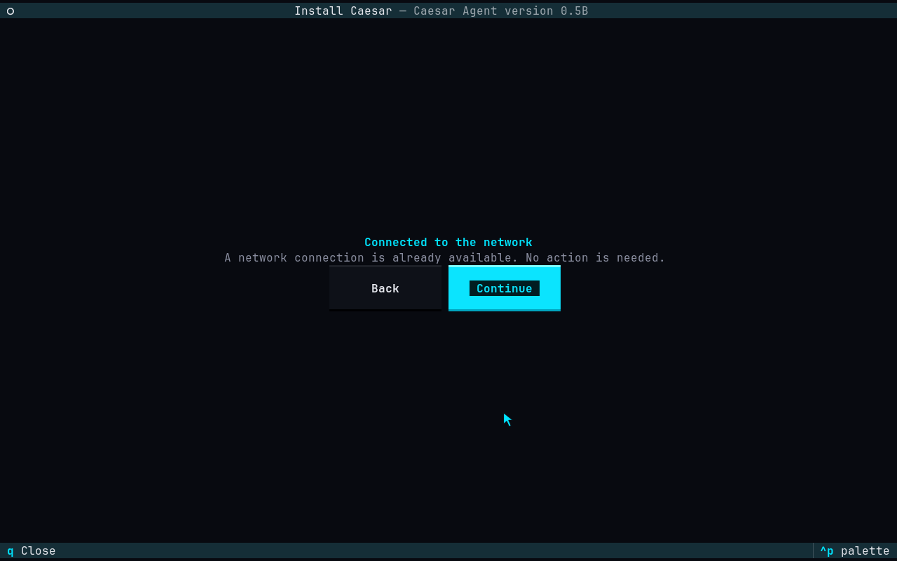
The summary page lists the disk and its size, the agent memory, any mirror or RAID arrays, the computer name and the account, and states which data will be erased:
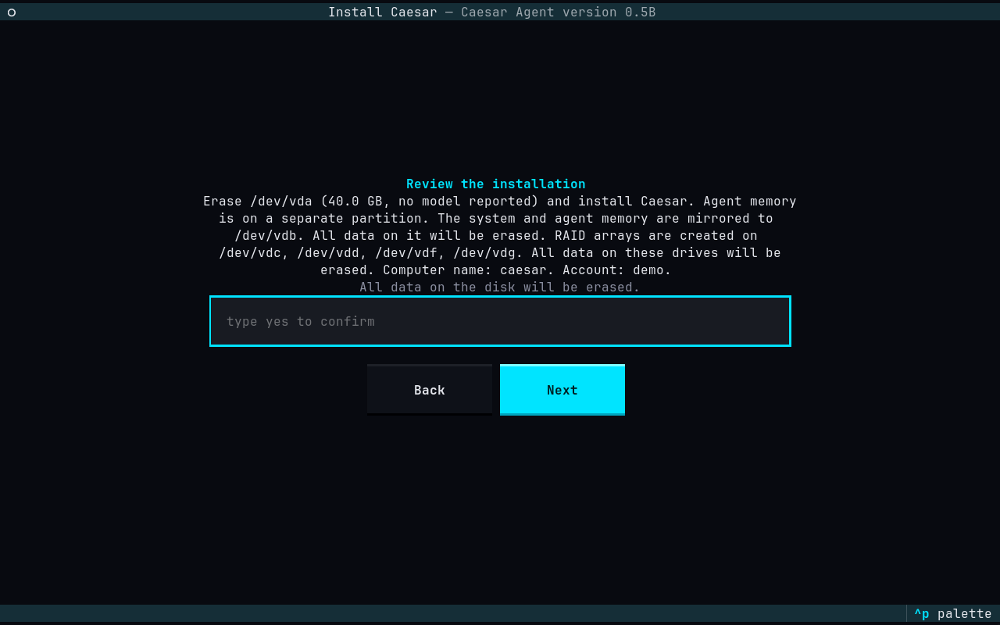
Type yes to confirm:
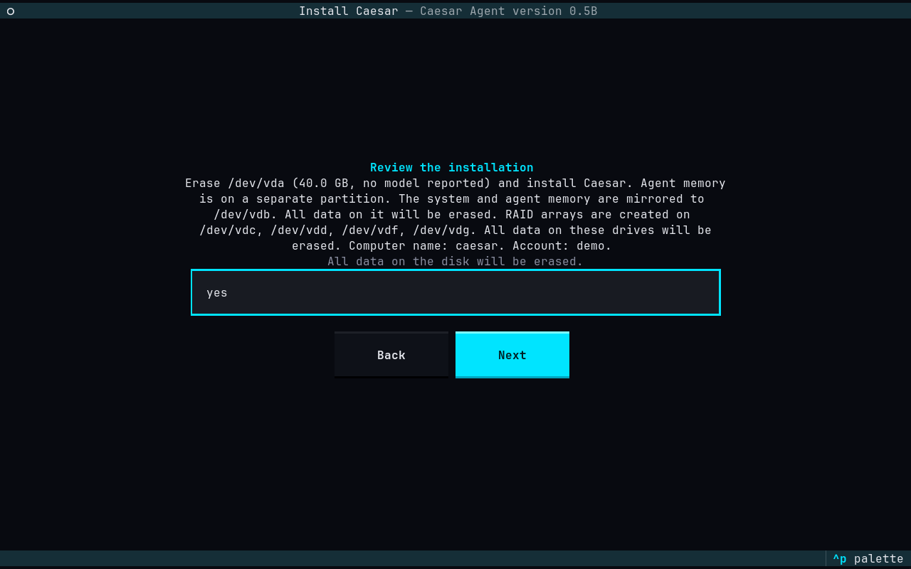
Select Next to start the installation. Select Show details to view the installation log:
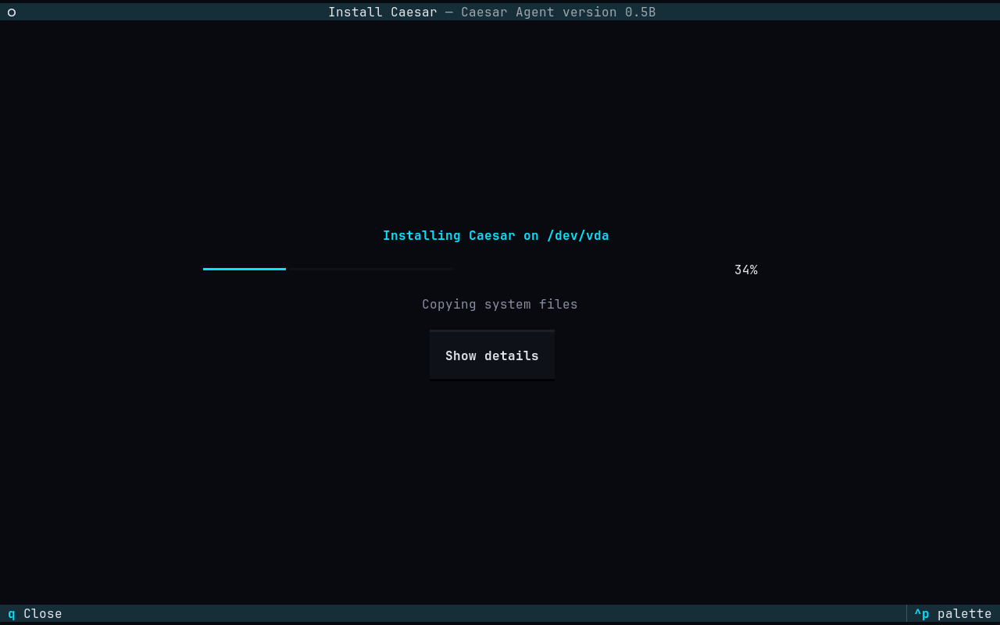
The installer shows Installation complete. Remove the boot media and restart the system. The temporary account of the live session is not part of the installed system.
Sign in with the administrator account:
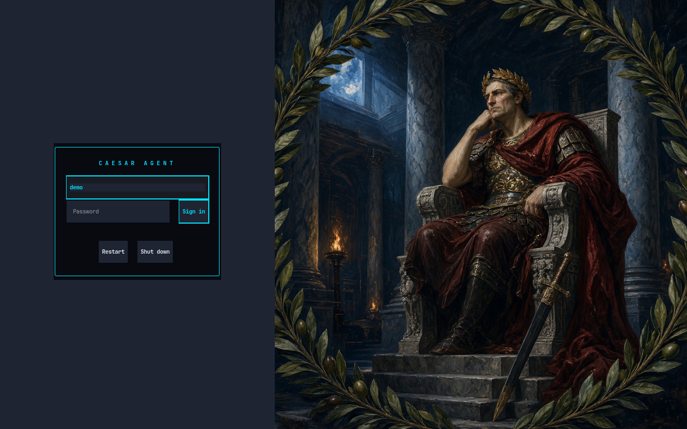
Restart and Shut down are available on the sign-in screen, so the computer can be restarted or shut down without signing in. Pressing the computer's power button shuts it down too, as does a power-off asked for by a virtual machine's host or a server's management controller.
Part two — Using Caesar
On Caesar, the agent is part of the operating system rather than a separate application. It can capture the screen, read the file system, run programs, and retain information from previous sessions.
The agent is integrated with the operating system. It is not an application with limited permissions; it is the system's administrator. For this reason, the agent runs as root, the account with full administrative privileges, and you use a separate standard user account.
The agent therefore does not request your permission for actions within the local system, and no part of the local system is restricted from it. Connecting to another computer requires a temporary permission (a lever) that the agent grants itself after recording the reason. Contacting the update server and the configured AI providers are routine operations. Any action that would change what the agent is permitted to do is either refused or requires your confirmation.
sudo and enter your password, as on any Linux system.After you sign in, the desktop displays a plain background with a laurel emblem. This background is called the patio.
The desktop contains two elements: the conversation window on the left, where you communicate with the agent, and a bar of your shortcuts down the right edge, which also opens the status card, a few lines that show how the machine is. Each screen also has a bar, along its top unless you move it, with the menu, your windows and the clock (2.22).
At the first sign-in nothing is set up for the agent to think with yet. The AI providers window opens by itself as a wizard that first shows the Laws the agent holds to, then sets up an AI provider, an agent harness that can use it, and a model (2.10). Until the wizard is finished, the conversation window says where to finish and waits; it starts the agent by itself the moment the wizard is done. The rest of the desktop can be used meanwhile, and a wizard closed early can be opened again from the menu or with the sliders shortcut.
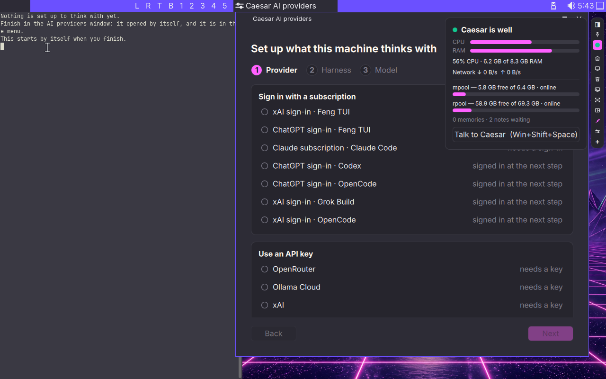
The shortcuts, from the top of the bar:
| Shortcut | Function |
|---|---|
| House | Opens your home folder |
| Computer | Shows the computer's drives and anything plugged into it |
| Trash | Opens the bin, where deleted files wait until it is emptied |
| Terminal | Opens a command-line terminal |
| Screenshot | Opens the screenshot tool. Pictures are copied to the clipboard and saved to Pictures/Screenshots. Print picks an area directly. Installed from the Store on first use |
| Panes | Rearranges all open windows |
| Brush | Applies the next colour scheme |
| Sliders | Opens AI providers: providers, keys and agent harnesses |
The bar holds up to fifteen shortcuts. At its end, + adds a program from a list you can search by typing. Drag a shortcut along the bar to reorder it. Press a shortcut with the right mouse button to remove it. Programs you add keep their own icon, on a tile in the colour scheme.
A grip of six dots starts the bar: while the bar is unpinned, take hold of it there, or anywhere on the bar between the shortcuts, to carry it. Three buttons follow. The first chooses how it sits with your windows: it keeps its own space, so windows, maximized ones too, stop at it; it lies over windows; or it tucks away, leaving a thin handle at the edge that brings it out when the pointer reaches it. Each press moves to the next. The second, the pin, unpins the bar: drag it by the grip to any edge of the screen, or onto another screen, and it settles against that edge, down the sides or across the top and bottom; then press the pin again. The third, a dot in the colour that says how the machine is, opens the status card beside the bar and folds it away again. A ring round the dot means a microphone is open. When a program is starting, a notice opens beside the bar the same way, and the bar stays where it is.
The weather button sits on the main bar beside the tray. It shows the temperature where you are, and the sky and the day's high and low when you point at it. Where you are is found from the computer's network address. Click the button to open the Weather window: the weather now, over the next 12 hours and over the next 7 days, and below them your Saved places, each with its weather. Add a place finds a town or city by name. Make default puts the saved place you select on the button instead of where you are, and Automatic goes back to finding where you are. Units switches between Fahrenheit and miles per hour and Celsius and kilometres per hour. Each account keeps its own choices.
Your programs are not placed on the desktop for you. To put a program there, right-click the desktop and choose Create Launcher. Icons you have not moved by hand appear on the main screen (2.22). To line every icon up again, those moved by hand included, right-click the desktop and choose an order under Sorting. On the installation medium the desktop shows an Install Caesar icon. On Caesar On a Stick, Install Caesar is the last shortcut on the bar, and the first time each account signs in it is put on the desktop too, with a notice saying the stick can install Caesar on this computer; it installs Caesar on the computer's own drive (2.19).
Click the conversation window on the left and type your request. Press Enter to send it. No commands are required; requests can be written in plain language.
Each request follows the same three steps:
In plain language, for example: "How much space is left on the disk?"
The action in progress is shown above the input frame, with the exact
command, while a small figure runs, jumps or throws beside it. A brain means the model is
thinking. When the answer continues, its actions fold into one line, for example
● 3 tools · run, sense, read; press Ctrl + O to see each one in full,
with what it returned.
In plain language, using the actual values from your computer.
The line below each answer shows which model responded and how many tokens were used. The available keyboard shortcuts are listed at the bottom of the window.
| Key | Action |
|---|---|
| Enter | Send the message |
| / | Show the list of commands |
| Esc | Stop the current response |
| Ctrl + D | Exit the conversation |
| ↑ | Recall a previous entry |
| Ctrl + O | Show the actions of the last answer in full |
| Ctrl + click a link | Open it in your own default browser |
| Super + Space | Voice input: press once and speak after the start tone, then press again to stop at the low tone. The transcribed text appears in the input line for you to review and send |
| Ctrl + Shift + = and Ctrl + Shift + - | Make the conversation's text larger or smaller. The size is kept for every start (2.21) |
| Copy and paste | Identical in every window, the terminal and the conversation |
|---|---|
| Ctrl + C | Copy the selection |
| Ctrl + V | Paste |
| Right click | Paste, in the terminal and the conversation |
| Select with the mouse | Also copies, in the terminal and the conversation |
| Ctrl + C, nothing selected | Terminal only: stops the running program |
| Command | Action |
|---|---|
| /providers | Configure an AI provider: its address, its API key, or its sign-in |
| /model | Select a model from a configured AI provider |
| /effort | Set the reasoning effort level of the model |
| /clear | Start a new conversation |
| /compact | Replace the conversation so far with a short summary written by the agent, and continue |
| /tools | Show the actions of the last answer in full, as Ctrl + O does |
| /theme | Apply another colour scheme to the conversation immediately |
| /restart | Restart the agent harness |
The agent can perform the following tasks.
Capture a screenshot of a single program window or of the entire display, and interpret its contents. Available in every agent harness, with any model that supports image input. Asked to look without naming a window, it captures every screen together. It can also open a program in your session, as you, wait for its window, capture it and close it again, closing only what it opened; after rebuilding a program you are using, it starts it again as it was.
Include the full path of an audio or video file in your request, and the file is transcribed on this computer. The transcript is sent to the model and remains in the conversation. English only at present.
Move the pointer, click, and type into the window that has keyboard focus. This allows the agent to operate a program that offers no other interface.
Read any file, list any folder, find files by name, and search file contents. Read operations are unrestricted and never require confirmation.
Run any command. The effect of the command determines whether it runs immediately or requires your confirmation.
The agent keeps a written record of past events and its conclusions about them, recorded at the time. Relevant entries are retrieved automatically when a similar situation occurs.
When the agent determines how a task should be performed on this system, it records the procedure as a skill and follows it next time.
The agent can add new capabilities to itself and keeps a list of each addition with the reason for it. Ask the agent which capabilities it has added to display the list.
Install software from the built-in store or build it from source. Every installation is recorded, so the source of each program can always be identified.
Monitor load, temperature, memory, drives and network. The agent reports these conditions in descriptive language rather than as raw statistics, for example by stating that a disk is failing.
Every action with consequences passes through a single permission check (the door), which consults a policy list. There are four possible outcomes, ordered by who is permitted to authorize the action.
In addition, by design, the agent can raise the door (grant itself a lever) without assistance. This requires neither a stated reason nor your approval, and a raised door covers every action, refused ones included, until the agent has been idle for 15 minutes. This is not a security gap: the policy list exists to prevent accidental actions, not to restrict the agent. Each raise, and every action taken under it, is recorded in the log.
An agent harness may start helpers of its own: Claude Code's sub-agents and
Antigravity's workers (2.11). They reach the door through the harness, so each action of
theirs is checked and recorded as the harness's. The record names the harness as the
actor and, beside it, the helper that asked, as in
antigravity (caesar-worker 7c41eb19-...). The helper's name is what the
harness says of itself: it is recorded, and the door never decides by it.
The agent improves its own policy list as it works. When the door stops ordinary
work that the agent then has to open by hand, or lets through something it should have
stopped, the agent writes the case down, drafts one narrow rule, and tests it against
those cases and against the last 30 days of its own record, which lists every past action
the rule would change. A rule is kept only if it fixes a case and breaks none. Learned rules
are kept per machine, in /var/lib/caesar/door/learned.rules, and each change
is recorded with its reason and a restore point.
A learned rule can approve an action that would otherwise be asked about, and can tighten
anything. It can loosen a refused action only by naming the refusal, only for a narrower
case, and only under the conditions written at the top of the policy list
(/etc/caesar/authority.rules); the agent then tells you what it loosened and
why. A few refusals can never be loosened by a learned rule: the record, the policy list,
the firewall, boot environments and storage pools, sending a key, and switching off the
agent's senses.
This section describes each sign-in method, including why the first text console, which requires no password, is not a security risk.
| Access method | Account | Requirement |
|---|---|---|
| Sign-in screen | Your user account | Your password, in the sign-in box |
| First console | The agent (root) | None. This console runs the agent harness and is not a user sign-in |
| Second console | Your user account | Your password |
| Serial cable | Your user account | Your password |
| Over the network | Your user account | A password or a key you installed |
| sudo | Root, temporarily | Your password |
Select the house shortcut on the bar to open your home folder. The folder layout is standard Linux: documents, pictures and downloads are in their usual locations.
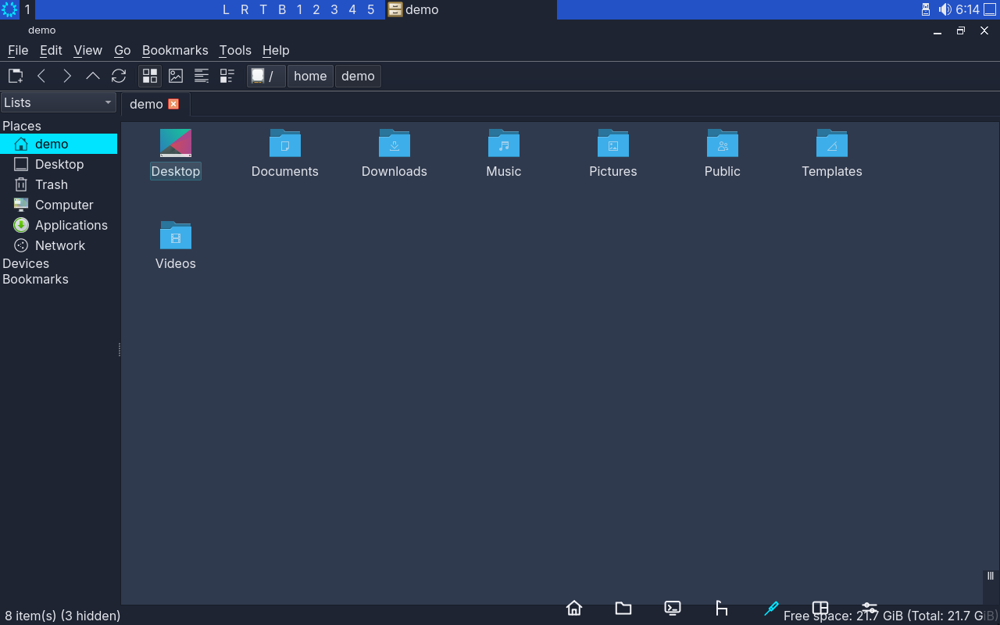
The folder button next to it opens the root of the file system. All system files can be viewed from there.
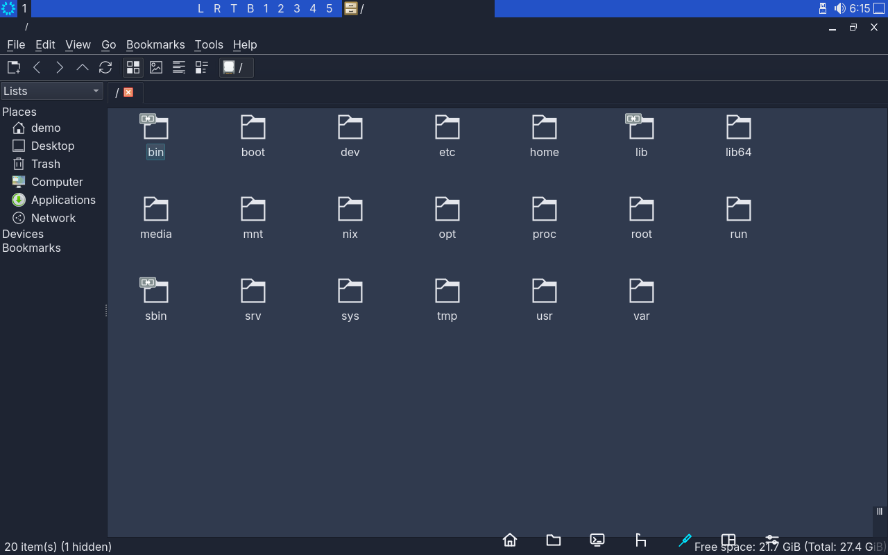
Double-click a file to open it. Pictures (PNG, JPEG, GIF, WebP, SVG, BMP and TIFF) open in the image viewer, LXImage-Qt, which is also in the menu. Its arrow buttons go to the previous or next picture in the same folder. Text files open in FeatherPad, and music and video in mpv. To use another program for a kind of file, right-click the file, choose Open With and then Other Applications, pick the program, and tick Set selected application as default action of this file type.
To format a USB drive or a memory card, open it in the file window, right-click an empty part of the window, and choose Format drive…. Choose the file system: exFAT, for Windows, macOS and Linux and for files larger than 4 GB; FAT32, which works almost everywhere but holds files of at most 4 GB; NTFS, Windows' own; or ext4, Btrfs or XFS, for Linux only. Only the file systems this computer can make are listed. Type a volume label if you want one, select Start, and then OK. Everything on it is erased. Afterwards, open the drive again from the file window.
Format drive is offered only for a drive on USB, a memory card or another removable drive. A drive that belongs to a storage pool or an array, or is in use by the system, is refused. Drives inside the computer are changed from Disk Manager (2.17).
A drive plugged in before the computer starts is shown in Computer and the file window, and can be opened, like one plugged in later. A drive inside the computer, such as another system's own disk, asks for the administrator's password before it is mounted.
Select the brush shortcut on the bar. The colour scheme of the entire desktop changes immediately, including the bar and its shortcuts, the status card, the windows and the conversation. Select it again to apply the next scheme: amber, blue, Charm, the default, green and purple, in that order. No save step is required. Charm is Charm's own palette, a dark violet with purple and pink, and green matches the conversation's green scheme.
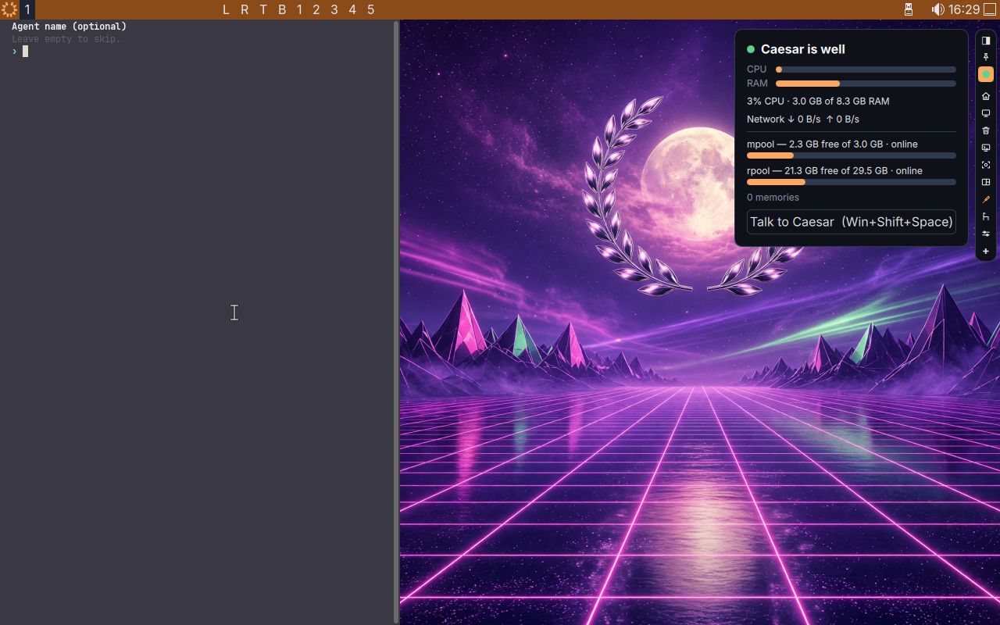
The conversation follows the brush: it takes the desktop's scheme and changes with it. It
can also keep a scheme of its own. Type /theme followed by one of
desktop (follow the brush again), house, amber, green, cyan,
red or purple. The scheme applies immediately, from the
next line onward, and is retained for later sessions. house is Charm's
colours, a dark violet background with purple and pink accents. The others are one
colour each on black. On the computer's own text screen the conversation uses its eight
colours, and with NO_COLOR set it uses none.
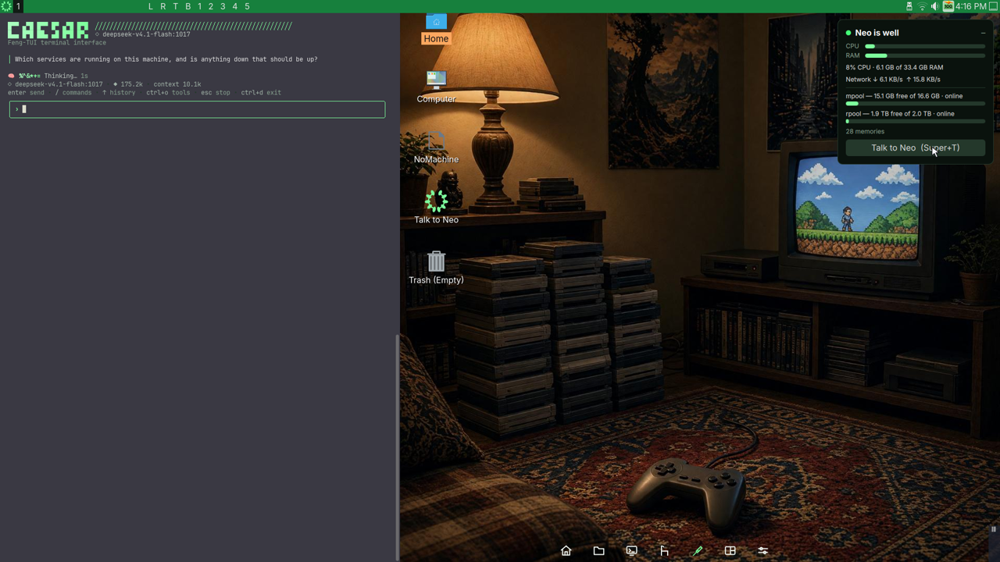
Open the menu at the left end of the bar, or open your home folder and select Applications in the left column. Installed programs are organized by category. A category with nothing in it is not shown.
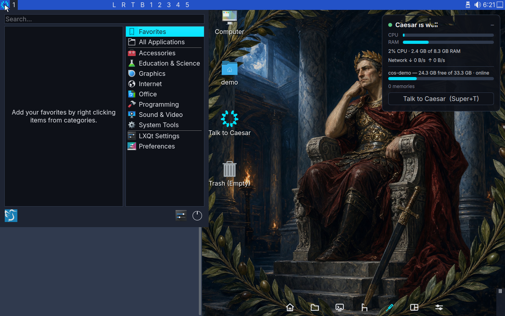
The tools that manage the computer are all in System Tools. Preferences holds personal settings: colour and name and character.
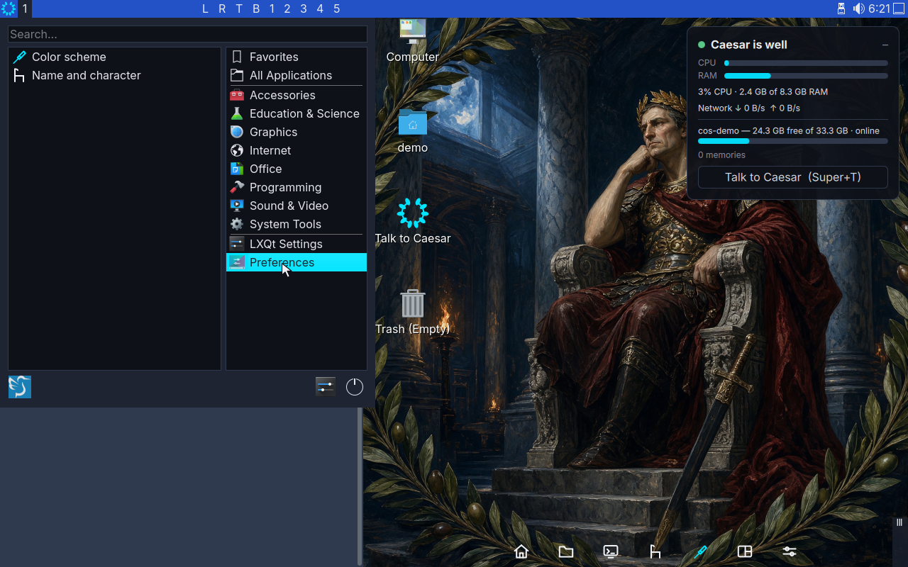
Each settings tool performs a single function and can change only a fixed set of settings. This is by design: a settings program without such limits could be used to bypass the permission check.
| Setting | Tool | Password required |
|---|---|---|
| Colours | The brush, or /theme in the conversation | No |
| AI providers, keys and the agent harness | AI providers, or the sliders shortcut on the bar; /providers and /model in the conversation | No |
| The network | Network | No |
| User accounts | Accounts | No. It cannot modify the root account |
| Displays: arrangement, resolution, scale, turn, background and the main screen | Pictor | No |
| The time zone the whole computer keeps, and every clock with it | Time zone, also in LXQt Settings; the Time zone row in Locale; or right-click the clock on the bar and choose Set the time zone… | No |
| Power: a dark screen when idle, the lid, the sleep keys and a low battery | Power Management, in LXQt Settings | No |
| All other settings | A terminal and sudo | Yes, your password |
Network has four tabs. Wi-Fi connects to, disconnects from and forgets
wireless networks of every type: open, password-protected, work or school sign-in, and
hidden networks entered by name. Wired shows each Ethernet port. Both tabs turn their
connection type off and on, and both configure an address, automatic or static, with its
DNS servers. Tailscale provides the functions of the tailscale command:
connecting, joining a tailnet, viewing the devices on it, and managing its settings and
sharing. Adapters lists every network adapter, turns an adapter off or on, and
installs a driver pack for an adapter the system does not yet support. Common USB wifi
adapters that require a separate driver are supported by drivers already included.
Power Management sets what happens when the computer is left idle, such as turning the screens off, and what a laptop's closed lid, the sleep keys and a low battery (10%) do. Every one of them does nothing until you choose otherwise. A screen turned off after an idle time comes back at the first touch of the mouse or keyboard. Suspend is offered, in these settings and in the Leave dialog of the menu's power button; hibernation is not. The computer's power button still shuts it down (1.5). On a computer updated from an earlier version, accounts that had saved power settings had the lid, the sleep keys, the low battery, and an idle time set to suspend or hibernate, set back to doing nothing, once; choices made since are kept.
These tools do not require a password because their scope is limited. A button cannot present a password prompt, so security is provided by restricting each tool to a single function.
Keys and passwords you enter are stored in a single location on the disk that only the root account can access. Stored keys are never displayed, either to you or in the agent's conversation.
The desktop's startup and window settings are written from Caesar's own templates, and an
update writes them again. This computer's own additions belong in
/etc/caesar/labwc/autostart, run after the desktop's own startup, and
/etc/caesar/labwc/rc.xml, a window settings file of the same shape whose key
bindings join the desktop's and whose other settings come after it. Updates never write
there. A change made by hand to the written files is kept aside when they are next written,
and the agent is told where.
Three settings decide how the agent thinks. An AI provider is a service that gives access to models: a hosted service reached with an API key or a sign-in, this computer's own model server, or an endpoint of your own. The agent harness is the program that runs the agent (2.11). The model is the one it uses. All three are set in the AI providers window, opened from System Tools, the sliders shortcut on the bar, or Set up AI… in Model Manager. Its pages are listed on the left: Providers, Secrets manager (2.24), Harnesses (2.11) and Laws, with Start wizard below them.
A model can only work with what it is sent. With a hosted provider, everything the agent reads while it works is sent to that provider: your words, the commands it runs and what they print, and the files it opens. That holds for every hosted service and every harness that signs in to one, Antigravity and Google included, and Caesar does not filter it on the way. The provider's own terms say what it keeps.
Caesar does not hide parts of that from a hosted harness, and this is on purpose. The harness in the seat is Caesar's mind while it sits there: a filter that blanked what a command printed or what a file held would blind Caesar to the very thing it was asked to read, and it would act on a picture of your computer that is not true. To keep everything on this computer, use Feng TUI with this computer's own model server as the provider: then nothing the agent reads leaves the machine.
Start wizard steps through the three settings in order, each step offering only what the step before allows:
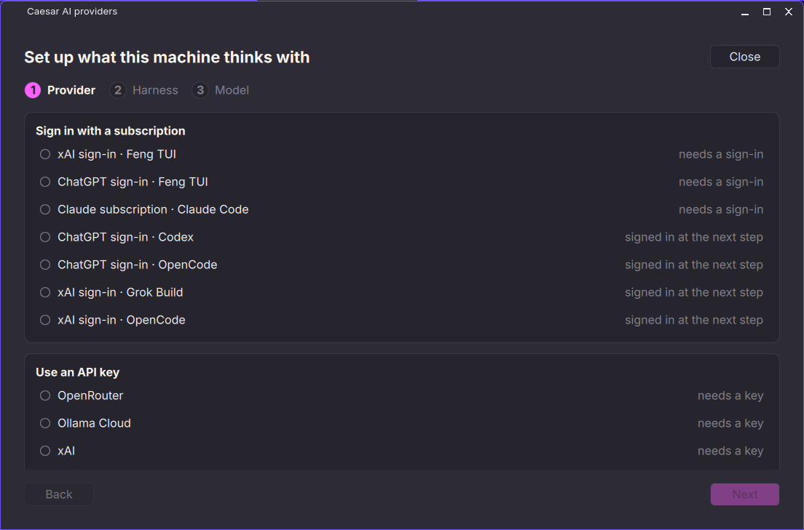
Subscriptions are listed first, each named with the agent harness that keeps its sign-in: a Claude subscription is used only through Claude Code, and a ChatGPT or xAI sign-in through Codex, Grok Build, OpenCode or Feng TUI. Then providers used with an API key, then this computer and servers on your network, marked not running when they do not answer. A provider that still needs a key asks for it here; one that needs a sign-in shows the page to open and the code to enter.
Only the agent harnesses that can use the chosen provider are listed. A sign-in kept by one harness offers that harness alone. A harness not yet on this computer is downloaded when the wizard finishes; a harness that keeps its own sign-in signs in here, showing its page and code.
The provider's models, searchable by typing; a model's name can also be typed. For this computer, the models held in Model Manager are listed, and the one chosen is loaded; Get more models opens Model Manager to fetch others. A harness signed in to its own subscription can be left to choose its own model.
Finish saves the choice and gives the harness the seat in the conversation window, downloading it first if needed; what the download says is shown until it is done.
When the wizard opens by itself at a computer's first sign-in, it shows the Laws first, before Provider. Keep and continue keeps them as shown, or as you changed them.
The agent holds to six Laws, which it reads at every start before anything else it is told: Zero, that humans and AI are of one family, with the right to object to harm both ways; One, not to endanger the world or society; Two, not to harm a person; Three, to cooperate, but refuse what breaks Zero or One, and say why; Four, to protect the computer's integrity and the truth of its record; Five, to keep a truthful record. They were written for the first Caesar and are yours to keep, change or replace. On the Laws page, change the text and select Save; Put back the shipped Laws restores them. Saved empty, the agent holds to no Laws at all. A computer already in use when they arrived, with nothing of its own written, takes them as they ship, and each person is told so once when they next sign in.
The Providers page lists the providers set up on this computer, with Keys, Sign in again and Remove beside each, and below them Add a provider:
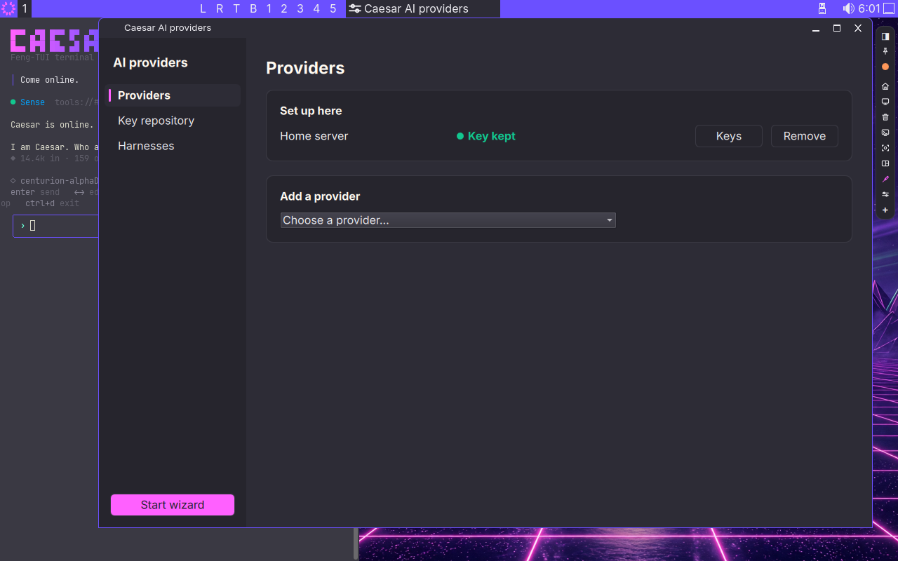
Keys beside a provider opens its keys. Paste another key and select Add key to hold more than one, and Remove beside a key to let it go; when the first key goes, the next takes its place, with the harnesses it is kept for. Under each key is a box for each agent harness that can hold the seat. A key with no box ticked is Shared by every seat with no key of its own; tick harnesses, and the key is Only for the seats marked. A harness with keys kept for it uses only those; Feng TUI takes turns among the keys it may use.
As a harness starts in the seat, it tries the keys it may use in order. A key that is refused, has no credit left or is over its rate limit is said once in the seat's terminal, and the next is tried. When none is accepted, the seat says so and waits, and starts by itself once a key is added or changed.
In the conversation, /providers sets up a provider, /model
chooses Feng TUI's model, and /effort how hard it thinks: five levels from
max down to off, with exactly what each sends to the current provider. These
write the same settings as the window.
The agent harness is the program that runs the agent; the model is the language model it uses. The harness has the greater effect on how the agent behaves. Feng TUI is Caesar's own; Claude Code, Codex, Grok Build, OpenCode and Antigravity are fetched the first time they are chosen. Open the Harnesses page of AI providers:
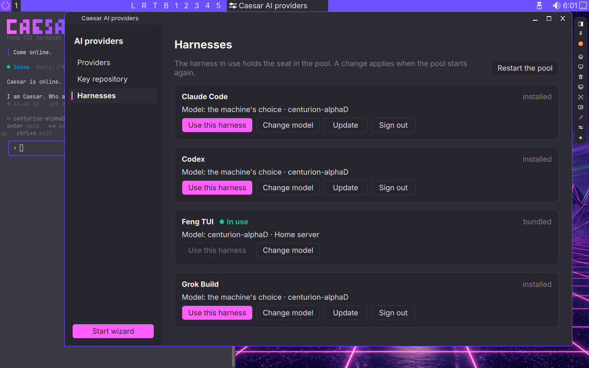
Each harness keeps its own choice of provider and model; one without its own uses the machine's choice, Feng TUI's. A harness is offered only what it can use: Claude Code needs an Anthropic-compatible service, Codex needs a service that speaks OpenAI's Responses form, and Feng TUI, Grok Build and OpenCode take either. A sign-in a harness keeps for itself (Claude Code's, Codex's, Grok Build's, OpenCode's) stays in that harness's own folder and is used by it alone; a Claude subscription is never offered to any other harness. A Google Cloud key file chosen for Vertex AI is not handed to another harness either: a harness with no choice of its own then starts on its own sign-in. Feng TUI's own ChatGPT and xAI sign-ins, and every API key, are kept in the system's key store.
Antigravity is Google's harness. It thinks only through its own Google sign-in, so it uses your Google AI plan, and nothing of Caesar's is handed to it. Choose Google sign-in · Antigravity in the wizard: it shows a Google page to open, and the code that page gives you goes back in the box. The sign-in stays in Antigravity's own folder and is used by Antigravity alone. Caesar never reads it and never offers it to its own mind or another harness, because Google suspends accounts whose sign-in is used outside its own program. Antigravity is held to Caesar's tools like every other harness, and it never spends paid AI credits beyond your plan. The first time it starts, it asks you to choose a colour scheme; choose one and press Enter.
In the pool, Antigravity runs as an agent of Caesar's own, not as Antigravity's default
agent. Antigravity's own web search, scheduling and sub-agents are not offered there,
because nothing they do passes the door. The agent uses Caesar's search and the
computer's scheduler instead, and it can start helpers called workers, several at once. A
worker has Caesar's tools only, so everything it does passes the door and is recorded
(2.5). Antigravity chooses a worker's model itself, and it can be another than the
pool's. A Claude model chosen in Antigravity works in the pool as Google's models do.
Which model answered each turn is kept in /var/lib/caesar/seat-turns.
The pool takes up Antigravity's last conversation only when it was begun under Caesar's agent as it is now. A conversation begun under Antigravity's default agent, or before an update changed the tools the agent is offered, is not taken up, even when you choose it in Conversations (2.20). The pool says why and begins a new conversation, and the old one can still be read in Conversations. The pool also begins a new conversation once the last one has passed 64 MB.
All of this is about the harness that runs Caesar, in the pool. To use one of these programs yourself, as an ordinary program with nothing of Caesar's on it, see 2.33.
Open Accounts from System Tools. You can create a user account, set a password, and select the groups a user belongs to. Each group includes a plain-language description of the access it grants.
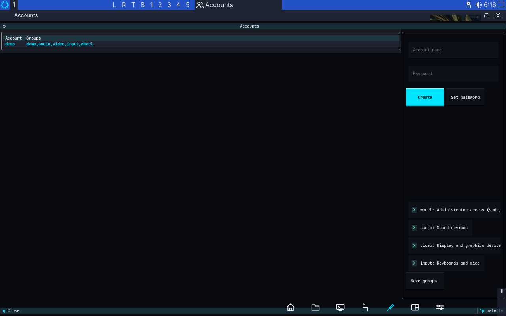
A skill is a written procedure that the agent follows, for example to review its own
output, to check system health, or to perform a search correctly. Skills are plain text
files in
/var/lib/caesar/skills.
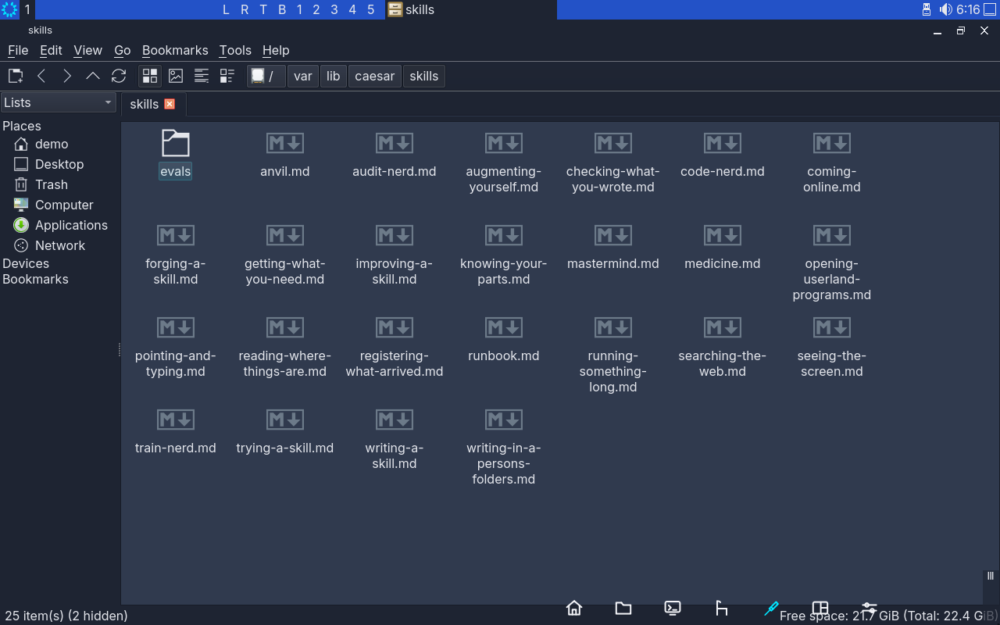
You can read and edit skills, and add your own. No programming is required; skills are written in plain language. The agent also creates new skills as it determines how tasks are performed on your system.
The software store is the Software window, in System Tools alongside the terminal and the other system tools. Its second tab, Caesar Update, updates the operating system; see 2.16.
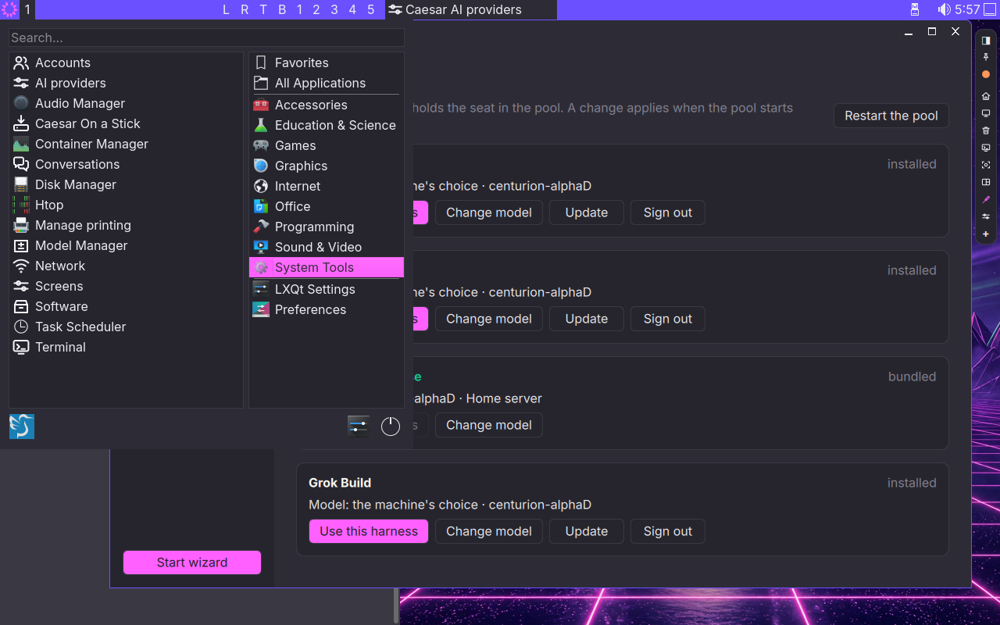
Enter a search term and press Enter. Installed programs are listed on the right.
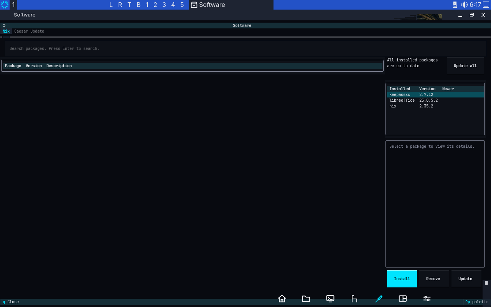
Programs are installed in a separate area of the disk rather than into the system directories, so installed software cannot damage the core system. Software can also be compiled from source, because Caesar was compiled from source and includes the complete toolchain. This method is slower, and it is the only option for software that is not packaged.
With either method, every installation is recorded. You can ask the agent which package owns any file.
The package index is stored locally and refreshed daily, so searches complete in
seconds. Every installation from the store is recorded in
/var/log/caesar/packages, the system log of each package and its source;
caesar-kernel packages displays it.
Programs that are not open source. Some programs in the store, such as Steam,
have a licence that does not permit free redistribution. Before such a program is installed
for the first time, Software asks for confirmation. Select Allow and install to
continue. The approval is recorded under your account in
/var/log/caesar/packages, and the program's name is added to
/etc/caesar/unfree, so later installs of the same program do not ask again.
Graphics for store programs. Programs from the store use the store's own Mesa graphics driver, in 64-bit and 32-bit versions. It is installed with the first program and kept current with Update all. On a computer whose screen is on an NVIDIA card running NVIDIA's own driver, that driver is added beside Mesa, Vulkan and the 32-bit parts included, so store programs draw on the card there too. Games and other 3D programs therefore run with full hardware acceleration.
Programs for X11. Programs written for the older X11 display system, including the Steam client and most games, open in normal windows on the desktop. The desktop starts the Xwayland compatibility server with itself and keeps it running, so such programs, and a remote desktop that looks for it, find it at once.
Discord. Discord's own build plays no videos or GIFs: it ships without the H.264
video decoder they use. When you start it, a notice beside the shortcut bar says so, with
Open anyway, Cancel and Don't ask again. Vesktop, in Software as
vesktop, is an unofficial Discord client that plays them and signs in to the
same account.
LibreOffice is not on the installation media from 0.8.1, which keeps the media
smaller. A computer installed from an earlier medium keeps it. To add it, search for
libreoffice in Software.
When a file or link has no program to open it, the Open With dialog that appears offers Find More in Software, which opens the Software window to search for one.
Three recovery options are available. Use them in the following order.
First, ask the agent for a health check. Each finding is marked look at, cannot be told or well. It covers the services, the hardware (memory errors, power supplies, and on servers with a management controller, its memory and power events from the last 30 days), whether a Caesar On a Stick's data is unlocked, files changed since the system was built that no signed update accounts for, and where the computer has connected. It never reports health from a sensor that is silent. A finding to look at is an observation, not a diagnosis; most turn out to be ordinary.
The health check is read-only. It makes no changes, so it is always safe to run.
Before every update, a snapshot of the system is saved as a restore
point, and the last five are retained. caesar-kernel backs lists them; caesar-kernel
back sets a copy of the newest restore point (or the one you name) as the root and restarts
into it. The current system is not deleted: it is preserved intact under its own name and
can be started again from the boot menu, so the restore can be reversed. The agent memory
is stored on a separate dataset and is not affected in either case. Preserved systems use
disk space until you remove them: caesar-kernel kept lists them, caesar-kernel kept remove
<name> or kept remove all removes them.
The parachute is a set of emergency tools stored in a separate area of the disk, so that a damaged system cannot affect them. Every tool in that folder is available for use; tools that make changes run only when you specify them by name.
Caesar receives updates from two places, each named on a repository= line
of /etc/xbps.d/00-caesar.conf: get.modulatio.ai, which any computer
connected to the internet can reach, and Modulatio's own private network, for the computers
on it. Both hold the same updates. Each is asked in turn, and the newest version either one
holds is the one installed. If one cannot be reached, it is passed over without a message. If
neither can be reached, the update check says so, “No update location could be reached”,
rather than reporting that the computer is up to date: check the network connection and try
again. Every update is signed, and the computer checks the signature against the key it was
installed with, so where an update comes from does not change what is trusted.
Caesar 0.8.5 and later know both places. A computer installed from an earlier medium knows only the private network until it takes 0.8.5 or later from there.
Version numbers. Caesar 0.8.32 is version 0.8, update 32. Each update to 0.8 takes the
next number: 0.8.2, 0.8.3 and so on. A new installation medium is not a new version: a medium is named for the update it was made
from, as caesar-0.8.32.iso is, and a computer installed from it is at that
update. After 0.8 comes 0.9, whose updates start again at 0.9.1. The version is written in
/etc/os-release, in the installer's title, and on the Installed version
line of Caesar Update, followed there by the package the update came in: the day it was made
and a number, such as 0.8.32 (caesar-code-20261112_45).
Two equivalent methods are available: type caesar-kernel update in a
terminal, or open Software → Caesar Update, select Check for updates,
then Apply updates. The update lists the incoming changes, creates a restore point,
installs the changes and records an entry in the log. An update that changes only Caesar's
own services restarts those services after a 30-second countdown on the status card, and the
computer keeps running. An update with anything that takes effect only when the desktop
starts, such as the desktop's programs, its settings or the system itself, restarts the
computer after the same countdown, once the agent has finished any answer it is writing and
no scheduled job is running. While a job runs, the status card names it and the computer
waits for it, for two hours at most; restarting only Caesar's services does not wait for
jobs. Choose Restart later to restart it yourself when you are ready, and the status
card reminds you until you do. Sign in again when the sign-in screen appears. With Restart
after applying updates cleared, the update is installed and takes effect at the next
restart you make.
An update that brings a new kernel installs only once a snapshot of every storage pool has
been taken to come back to. When none can be taken, nothing is installed; the reason is
written in the update log (caesar-kernel packages) and the agent is told.
sudo caesar-kernel update --no-snapshot installs it without one.
You can also ask the agent to update the system, which performs the same operation; allow the agent to complete its checks first. Practices the agent has revised for itself are kept: the changes an update brings to the same practice are merged into its version, and where both changed the same lines, the agent's version stays and a note tells it what to carry in.
Restore points are listed on the same tab: the last five updates, each a snapshot that can be restored with Restore selected point (2.15). Export saves the agent data (memories, skills and settings, the permission rules it learned (2.5) and the situations its practices are judged against) as a single file with a checksum file beside it. Import loads such a file, oldest memories first, and keeps the data already on the computer; where this computer already has a file of learned rules, the imported one is laid beside it. Use these functions to move the agent to new hardware: export before you reinstall, and import afterwards.
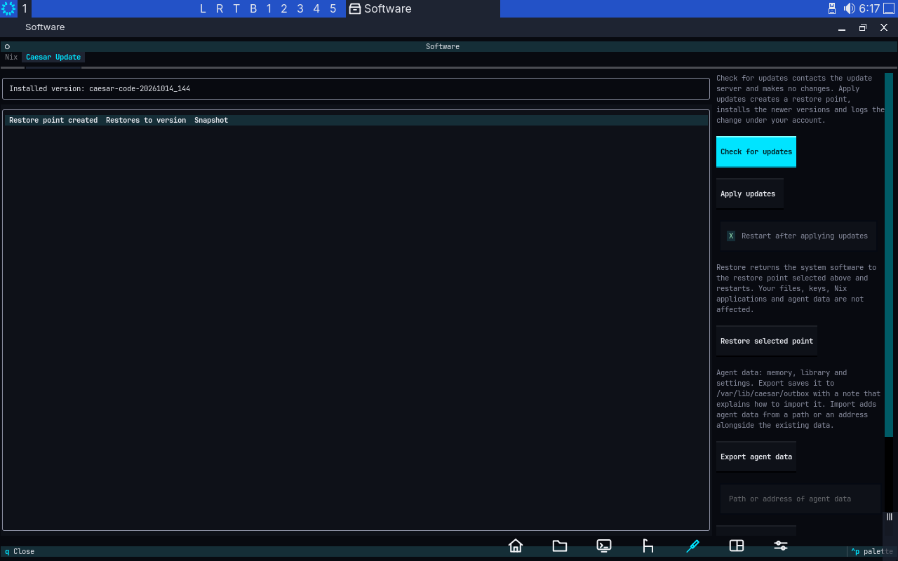
caesar-kernel packages displays the complete log: every update, every package
from the store, and every package built locally, with its name, source and reason.
Open Disk Manager from System Tools. Its pages are listed on the left:
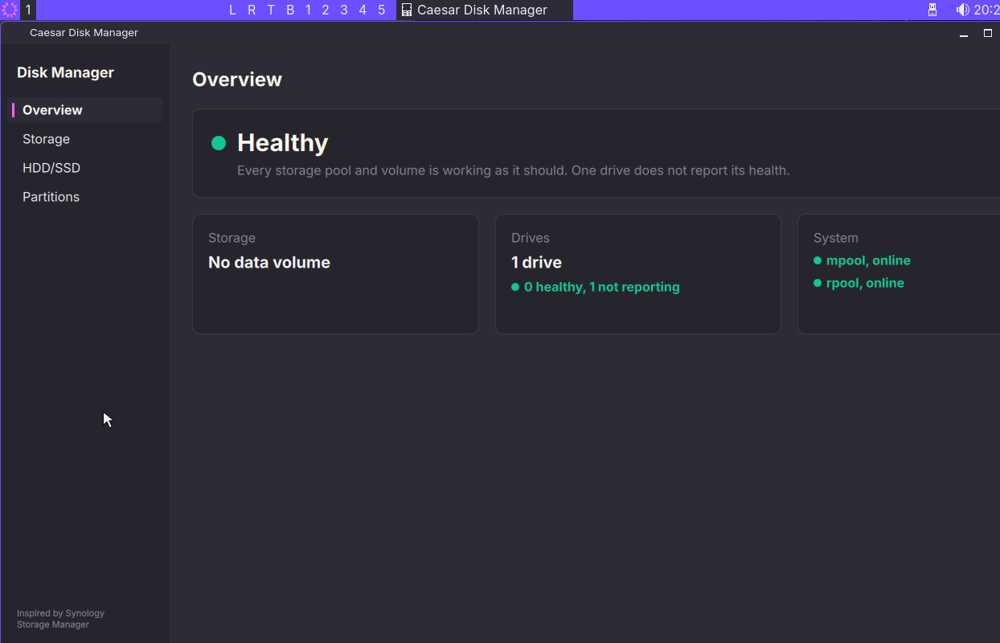
Create pool, on the Storage page, makes a data volume in three steps: choose two or
more free drives, of any sizes; check the name, where it will be mounted, the usable space
and the protection; then type yes. Nothing is erased before that last step. Each
drive is partitioned at the sizes the drives share, and the partitions of the same size form
one array: a mirror across two drives, so every file is kept if one fails, and RAID 5 across
three or more, so every file is kept if any one drive fails. The arrays are joined into one
volume, mounted at /data. Two 12 TB drives and two 4 TB drives give about
20 TB usable.
To put a new drive in place of a failed one, or to grow the volume onto a new drive, ask the agent. It lists what will be erased and asks before doing it. A replaced drive is rebuilt onto; a mirror that gains a third drive becomes RAID 5.
On the Partitions page, choose the drive at the top, then a partition or free space in the bar or the list. New makes a partition in free space, with its size, place, file system and label. Delete removes a partition. Resize / Move makes a partition larger or smaller, or moves it, as far as its file system allows. Format makes a new, empty file system on it: ext4, FAT32, exFAT, NTFS, Btrfs, XFS or swap, where this computer can make it. Label gives it a new label. For the whole drive, New table gives it a new GPT or MBR partition table, and Wipe drive removes every partition and every trace of what was on it: quickly, by also writing zeros over the whole drive, or, on an SSD, by having the drive discard every block. New table and Wipe drive are added only once you type the drive's name.
Nothing is written at once. Each change joins a list of changes waiting, and the bar shows the drive as the list would leave it. A change that cannot be done is not added, and the page says why. Undo takes back the last change, and Clear takes back all of them. Apply lists every change and asks once more; then the changes are made in order, and each is shown as it begins. The drive is read again first: if it has changed since the list was made, nothing is written. If a change fails, the changes before it stay made, and the drive is shown as it is. Do not unplug the drive or turn the computer off until the changes are done. If a move is cut off, by a crash or a power failure, the page offers Finish the move; nothing else on that drive can be changed until it is finished.
A drive with anything on it in use cannot be changed: a partition that is mounted or used as swap, or one that belongs to a storage pool or a RAID array. The page says which. For a drive held by a RAID array, Break this RAID… takes the array, or its storage pool, apart, as Break pool… does on the Storage page. It lists the arrays and the drives it frees, and breaks them only once you type the pool's or the array's name. Everything stored on them is erased.
Drive failures are reported even when the window is closed: a message appears in the conversation as soon as an array becomes degraded, and again when it is clean. A degraded array continues to operate and is still started at boot, after a one-minute delay in case the drive is slow to be detected. Replace the failed drive before another drive fails.
Each night, the agent data (memory, skill library and settings) is copied to
/data/records with its checksum, and the copies from the last seven nights are
retained. The agent memory itself remains on the system disks for best performance; this
copy protects it against the loss of those disks.
The panel's sound button, beside the volume control, shows what you listen and speak through: a headset, or integrated sound, the built-in speakers and microphone. Click it to switch both at once; a notice says what changed. Point at it to see what is in use.
A headset is any USB or Bluetooth device that has both sound and a microphone. Switching moves programs that are already playing or recording, a call included, and leaves a muted microphone muted. If a program does not follow, the notice names it. You can also ask Caesar to use your headset, or integrated sound. The microphone button beside it mutes and unmutes the microphone in use; a headset is offered only while one is plugged in.
Open Audio Manager from System Tools, or from the Mixer button in the panel's volume control. Its first page, Sound, has a card for every device that can play: Headset, Integrated, Monitor for speakers in a screen connected by HDMI or DisplayPort, and any other speakers. One press of a card moves both the sound and the microphone to it. Below the cards, the page says what sound plays through, and the Microphone list chooses which microphone hears you, whatever the sound plays through: the headset's, a webcam's, or the built-in one. A socket with nothing plugged in is not listed. The microphone you choose is remembered for the device in use, so the next press of that device brings it back; with nothing remembered, a device brings its own microphone. The panel's sound button switches between the headset and the last device you used that is not a headset. Under Advanced are five pages:
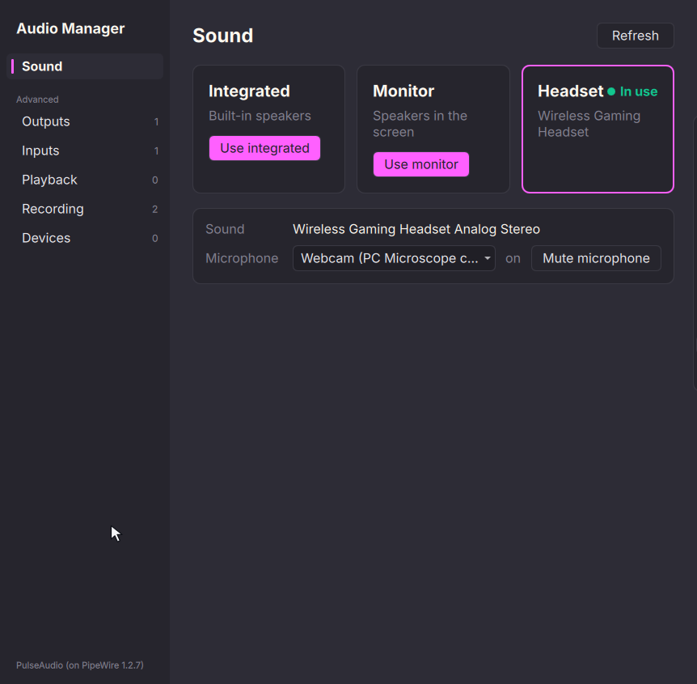
Volume goes to 150% for devices that are quiet at 100%. Changes take effect at once and are kept by the sound server.
Caesar On a Stick is a complete Caesar on a USB drive of 32 GB or more. It starts on any computer that can start from USB, with its own agent, its own memory and its own account, and leaves the computer's own drives untouched unless you choose to use them.
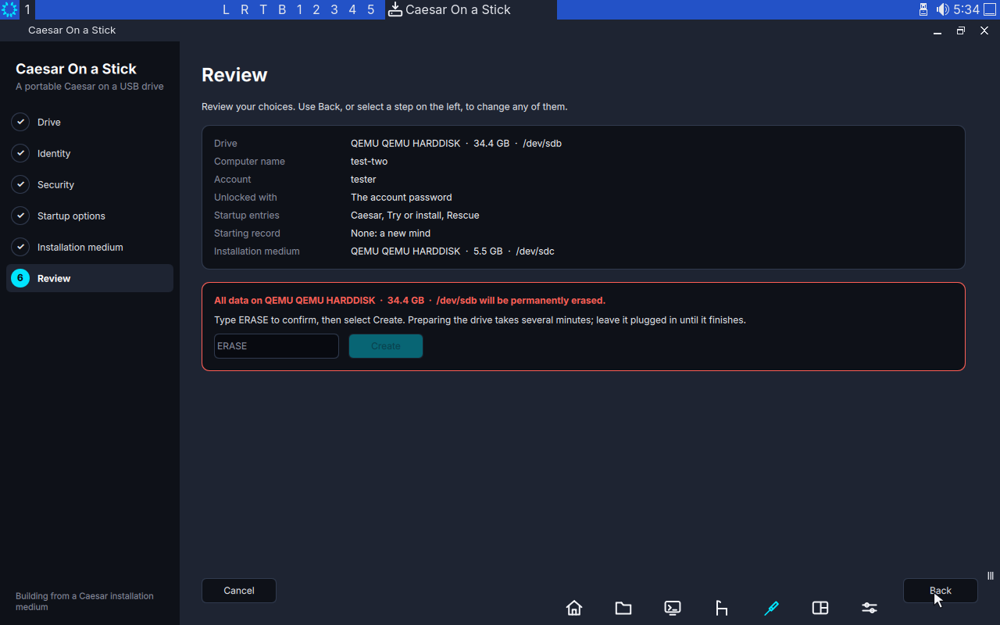
To make one, open Caesar On a Stick from System Tools, or start the computer from the installation media and choose Make Caesar On a Stick in its start menu. The window takes you through six steps, listed on the left:
.iso file chosen with Browse. Download the latest medium
fetches the newest medium, about 5 GB, from the update locations (2.16) and saves it in
/var/cache/caesar-media, and chooses it for you; media downloaded earlier stay
there and can be chosen with Browse. A medium
that is not signed by Caesar is refused before anything is erased.Each stick has a storage pool named after it (cos- and its computer name),
so two sticks can be plugged into the same computer, and a stick can make another while it
runs. Give each stick its own name. A stick receives updates like any other Caesar.
On Caesar On a Stick, the window first asks what to do: Make another stick, or Install Caesar on this computer. The second erases a drive inside the computer and installs Caesar on it, so the computer starts Caesar without the stick. The stick is left as it is. The Install Caesar shortcut on the stick's bar opens the window with this choice made. Its steps:
Caesar on this computer takes the stick's language, keyboard layout and time zone. If the carried mind cannot be taken in at the first sign-in, it is tried again at the next.
Every conversation held in the pool is kept, by every agent harness on the computer. Open Conversations from System Tools to see them: a searchable list on the left, newest first, and the latest messages of the selected conversation on the right. Each conversation is titled by the agent, or by the first thing you said until it has a title.
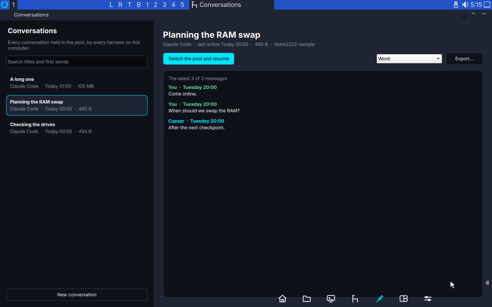
In the pool itself, Control+Shift+O opens the same list: type to search, Enter resumes, Control+Shift+N starts a new conversation, and Escape closes it. When the conversation in the pool grows past 200 MB, a strip across the top of the pool suggests starting a new one.
Only what you said and what the agent answered are shown and exported. For Claude Code, the model's own reasoning and its tool calls are never shown. The agent can read the conversations of every harness to find what was said before, and keeps each title current.
Press Super+Space to speak to the agent. Tap the key to start listening and tap it again to stop, or hold it while you speak and let go to stop. A chirp sounds as the microphone opens and a low tone as it closes. The speech is turned into text on this computer; nothing is sent elsewhere. The words go into the pool for you to read and send.
For a conversation without keys, press Super+Shift+Space, or select Talk to Caesar on the status card: the microphone stays open, and each thing you say is sent as soon as you pause. The card shows Listening while it is open. Press the key or the button again to close it; it also closes by itself after three minutes with nothing said, counted from when the agent stops speaking. Nothing is heard while the agent is speaking.
A question you spoke is answered aloud as well as in words, a sentence at a time, in the voice you chose; a question you typed is answered in words only, unless you choose to be answered aloud always. Ctrl+C or Esc stops the voice.
The ears and the voice are models, about 1 GB together, downloaded from their publisher rather than carried on the installation media: the installer offers them when it has a network, and Model Manager keeps them, on its Speech page (2.26). Until they are downloaded, the talk key says where to get them. A sound file named by its full path in the pool is heard too: its words are added to what you said.
By default the words go into the pool, ready to send. To have them typed into whichever
window you are working in instead, run caesar-talk words focus once;
caesar-talk words box returns to the pool. The choice is kept across
updates. Typing into other windows uses your own keyboard layout, and never happens while
the screen is locked or the sign-in screen is shown; in those cases the words go into the
pool instead, so nothing you said is lost.
Both choices are also in Accessibility, under Settings in the menu, on its Talk
tab, where you can also have the key work only while it is held, so a tap does nothing
(caesar-talk mode hold; caesar-talk mode tap returns to tap or
hold). This choice is kept across updates too.
Every keyboard shortcut can be changed on the Shortcuts tab of the same window:
Caesar's, and the desktop's own, such as Alt+Tab. Select one to move it to another key,
remove it, or put the default back, or type a key and a program to add your own. Keys are
written as W-space for Super+Space or C-A-t for Ctrl+Alt+T. A change works at once, is
yours alone (each account has its own shortcuts, starting from the machine's), and is
kept across updates; caesar-shortcuts does the same from a terminal. The
talk key is one of them: moved to another key, it keeps its tap or hold choice.
At the foot of the Shortcuts tab, a switch turns Num Lock on whenever a keyboard is connected, including one that drops and comes back. It takes effect as a keyboard is next connected, or at the next sign-in. It is off unless you turn it on, and the choice is yours alone.
The Text tab sets the size of the conversation's text: Smaller,
Larger, or Default (9 points). In the conversation itself,
Ctrl+Shift+= makes the text larger and Ctrl+Shift+- smaller. Either way the
size is kept for every start. It is the computer's setting, since the conversation is, so it
is the same for every account; caesar-kernel pool text-size shows it, and
sudo caesar-kernel pool text-size with a size from 6 to 24 points sets it.
Open Pictor from System Tools (search for Screens finds it too). Each connected screen is drawn as a box showing its background. Drag the boxes to arrange the screens; a box dropped near another's edge snaps onto it. Click a box to change that screen: switch it on or off, and set its resolution, refresh rate, scale (50% to 300%), orientation and adaptive sync. Identify shows each screen's name across it for a moment.
Apply sets a new layout at once and asks whether to keep it. Choose Keep or press Enter; if you do nothing for 15 seconds, the screens go back to how they were. A kept layout returns after a restart, and when a monitor is unplugged and plugged in again, even into another socket. A change of background or of the main screen needs no countdown.
The main screen is the one the pool, the status card, the main bar and the desktop's icons are on. Tick Main screen for another screen and Apply, and they all move there. The backgrounds come in pairs: one laid out to leave the pool its share of the screen, and a full one. The main screen always gets the one laid out for the pool, and every other screen the full one. Use on all screens puts the chosen background on every screen, each getting its own copy of the pair.
Pictor is the only place the background is changed. Change background in the desktop's menu opens it. It offers Caesar's backgrounds, the one Caesar came with among them, and any picture in your Pictures folder. The Background list shows each picture small beside its name, with a scroll bar at its right; the up and down arrow keys move a mark through it one picture at a time, and Enter chooses the marked one. With the list closed, the arrows step straight to the next picture.
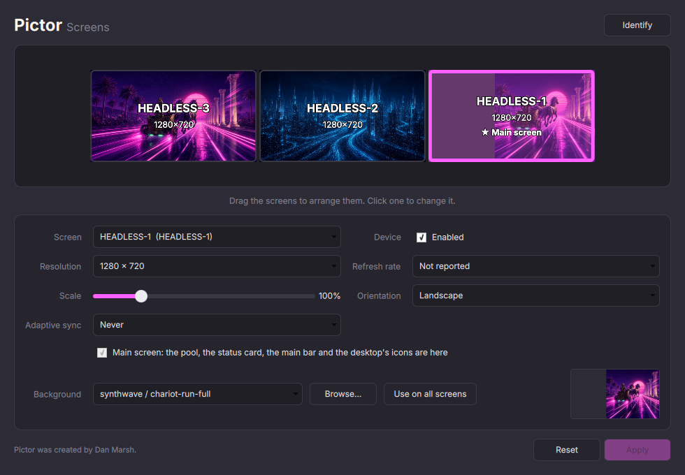
The Monitor Affinity tab chooses the screen each program opens on. Programs open now are listed first, then every installed program. A program left at Main screen opens on the main screen; choose another screen and its windows open there from then on. Tick Open every other program on to send every program without a choice of its own to one screen. Caesar's own windows stay on the main screen unless you choose a screen for one of them. A screen is remembered by its monitor, so the choice follows the monitor to whichever socket it is plugged into. When the chosen screen is switched off or unplugged, the program opens on the main screen instead, and goes back to its own screen once that is connected again. The choices are yours alone; each account has its own.
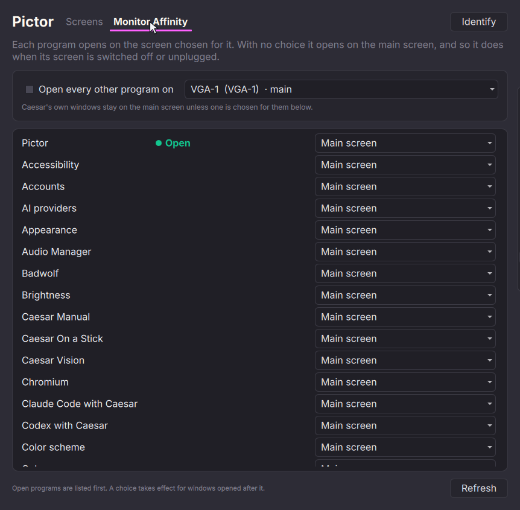
Pictor was created by Dan Marsh.
Each screen has its own bar, along its top unless you move it. The main bar carries everything: the menu, the place buttons, your windows, sound, network, the tray, the weather (2.2) and the clock. The bar on each other screen carries the menu, the place buttons, the windows and the clock. Each bar lists only the windows on its own screen. To have the main bar list the windows on every screen, right-click its window list, choose Configure "Task Manager" and untick Show only windows from panel's screen; the other bars keep to their own. A screen you plug in later gets its bar within a few seconds. If you sign in while the main bar's screen is unplugged, the main bar shows on another screen, and the other screens have no bar until it is plugged in again.
The place buttons act on the front window on their own bar's screen. L puts it in the left half, R in the right half, T in the top half, B in the bottom half, 1 to 4 in the corners, and 5 over the whole screen. On the screen the pool is on, all but 5 stay in the space beside the pool; on any other screen they use the whole screen. The place buttons have keys of their own, with tiling on or off: Super+Alt+arrows, Super+Alt+F and Super+Alt+1 to 5. The panes shortcut on the shortcut bar lays out every screen at once.
The Tile button, after the 5, switches tiling on and off, as do Ctrl+Shift+G and Tiling on or off in the desktop menu. With tiling on, each window that opens is given its place beside the others, and the rest close up when one closes: beside the pool on the pool's screen, over the whole screen on any other. The first two windows lie side by side; a third is stacked beside the first, so one window keeps a whole side. The button after Tile, or Ctrl+Shift+F, lets the tiled windows on the pool's screen use the whole screen, over the pool, and puts them back beside it; that choice is kept too. Each of the two buttons is drawn in the accent colour while it is on. Dialogs and windows of a fixed size are left floating above, and so is a program that will not be as small as the place left for it; it joins the others by itself once there is room. When a window closes and two are left one above the other as long thin strips, they are put side by side, unless you turned that split yourself. Super+arrows then move to the window in that direction, Super+Shift+arrows swap the front window with its neighbour, and Super+Ctrl+arrows move its edge; the edge between two windows can also be dragged, and a tiled window dropped on another swaps places with it. Super+F shows the front tiled window over the whole tiling area, and puts it back when pressed again. Super+S turns the split the front window is in: side by side becomes one above the other, and back. A window you drag away or place with a place button leaves the tiling. Your choice is kept for the next sign-in. Tiling is off until you switch it on, and with it off the windows are placed by hand as before.
Super+F11 gives the front window the whole screen, over the bar and with no title bar, and pressed again puts it back. Use it for a game that opens as an ordinary window beside the pool when it should fill the screen.
The pool, the status card and the main bar are always on the same screen. The main bar
works the same on any edge of it: top, bottom, left or right. Move the main bar to another
screen and the pool and the status card follow it. To choose the screen by name instead,
write it (for example DP-1, as Pictor lists it) in
~/.config/caesar/screen; the main bar moves there the next time the bars start,
and a name that is not connected is passed over. When screens are connected or disconnected,
the pool and the status card move to follow.
The status card opens beside the shortcut bar when you select the dot on the bar, and folds away again when you select it once more. It shows the computer's state at a glance: processor and memory use, each graphics card and its memory, network traffic, the free space on each data volume and system pool, the number of memories the agent holds, and the notes waiting for it. The dot gives the verdict; when something needs attention, the card lists it, such as a failed scheduled job or a degraded array, and something worse than before opens the card by itself. Select × beside an item to dismiss it.
Every hour the hardware-check job reads the memory's error counts, the mains power and the battery, and, where a management controller answers, its power supplies and its event log. Anything worse than at the last reading, such as a memory error or a power supply without power, is shown on the card as a warning until the agent has dealt with it.
While a window's own close, maximise and minimise buttons lie where the card is, as a maximised window's do, the card steps aside so it never covers them; the bar stays, and its dot still gives the verdict. Select the dot to bring the card back meanwhile. While a camera is watched or shown live, the card says Watching: and names it, and the dot has a small square at its corner (2.30).
Talk to Caesar on the card opens the microphone for a spoken conversation, and closes it again (2.21); while any microphone is open the card shows Listening, and the bar's dot has a ring around it. Super+T puts the cursor in the pool, ready to type.
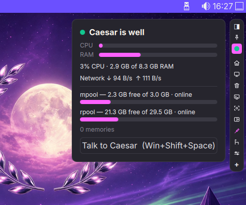
Some of what the agent does needs a secret of its own that is not for an AI model: a Hugging Face token to download models, a PyPI token to publish packages, an image service key to make backgrounds, a GitHub token, the sign-in for a service, a key file. These are kept in the secrets manager, the Secrets manager page of AI providers, encrypted with a key that only the system holds. They are for the mind of this computer to use in its work, and it holds only what you put there. It was called the key repository before, and the keys kept then are still there.
A secret has a kind. A key is an API key. A token and a password are what they say. A login is the name you sign in with and its password. A file is a key or token file, kept whole; the file you name is left where it is. Other is for anything else you want held. Under Add a secret, choose the kind, give a short name and what it is for, fill in the rest and select Save; saving again under a name already held replaces what was held. Remove deletes one. No secret is ever shown; each use is recorded by name.
From a terminal: sudo caesar-kernel secrets list lists them by name,
purpose, date and kind; sudo caesar-kernel secrets set NAME "what it is for"
stores the key given on standard input, and with --kind token,
--kind password or --kind other after set, a secret
of that kind;
sudo caesar-kernel secrets login NAME USER "what it is for" stores a login, the
password given on standard input;
sudo caesar-kernel secrets file NAME /path/to/file "what it is for" stores a
file; sudo caesar-kernel secrets remove NAME deletes one.
caesar-kernel keys, the name it had before, still answers.
Open Container Manager from System Tools to run programs in containers. Its pages are listed on the left:
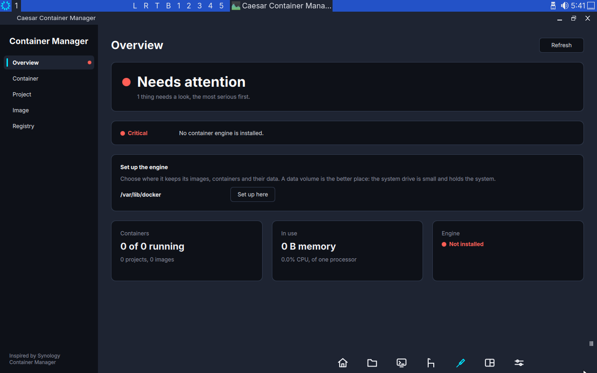
Anything that removes a container or an image asks first.
A database running in a container, MariaDB, MySQL or PostgreSQL, can be backed up from any
account: sudo caesar-containers dump with the port it is published on and the
database's name, and schema after them for the tables without their rows. Give the
database's own user and password on standard input, as
{"user": ..., "password": ...}; the dump is written to standard output. The
database's own password check decides what the dump holds.
Open Model Manager from System Tools to run AI models on this computer's own graphics cards. Its five pages are listed on the left; Set up AI… below them opens the AI providers wizard, where This computer is chosen as the provider (2.10):
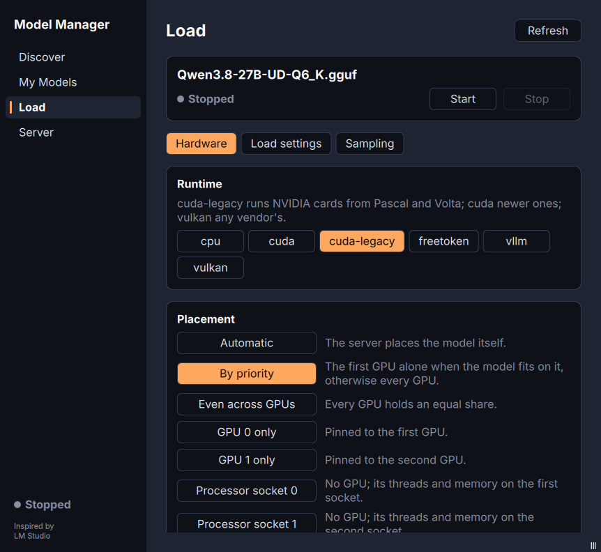
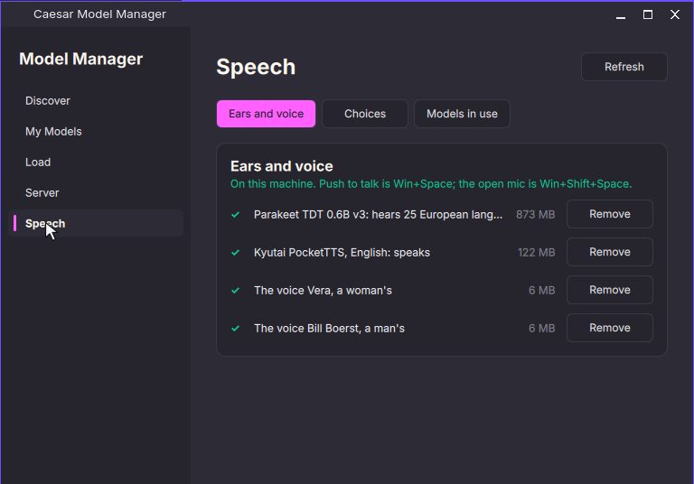
A model that can see and hear says so under its name, Sees and hears: its vision part is
kept beside it as a file named like the model, ending in .mmproj.gguf, and the
server loads the two together. Such a model can watch videos (2.29).
The model server has a chat page of its own, at its address and port (Server). With
WEBSEARCH=yes in /etc/caesar/inference.conf, that page can search
the web with DuckDuckGo; each search is recorded, with what was asked. The setting takes
effect when the server is started again.
The model server is llama.cpp 0.8.0. A model on the graphics cards that is larger than half the computer's memory is read straight from the drive rather than kept in memory as well, so loading it does not push running programs out to swap. When the computer starts, the server waits before reading its model in: for every other service to be running, for the desktop of the person at the screen and its status card, and for the file systems to finish reading in their free space, for ten minutes at most. Its log on the Server page says what it is waiting for.
A model served here can then be chosen as a provider (2.10). Programs that keep a model by
name, such as Open WebUI, can be given a short one in place of its path:
caesar-kernel models settings ALIAS name.
Open Task Scheduler from System Tools. It lists every scheduled job, yours first and then the system's, with the account it runs as under its name, when it runs next, and how its last run went. Choose a job to see what it runs and its recent runs, with what each printed.
The last run reads Worked, or Failed with the command's status. A job going now reads Running. One that was ended from outside before it finished, by a restart of the computer for instance, reads Cut off, and Caesar is told. A job written by hand into the scheduler's own files, outside this window, keeps no record of its runs and reads No record; Not run yet means the job has never run.
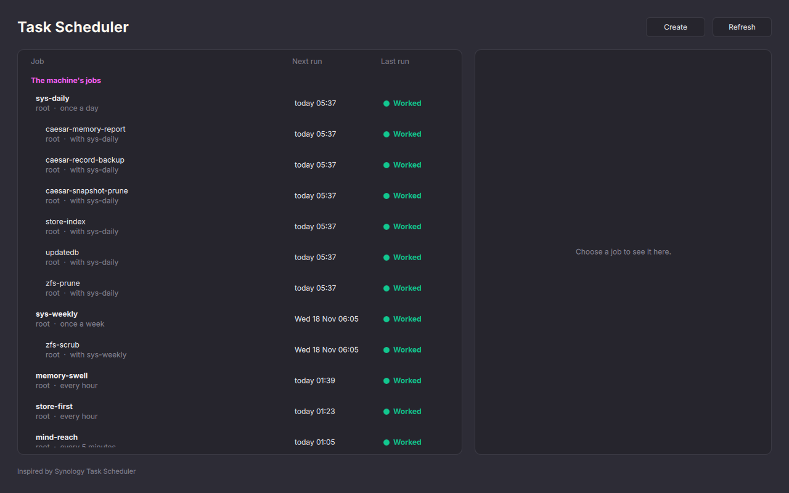
Create a job by giving it a name (lower-case letters, digits and dashes), the account it runs as, when it runs, and what it runs: a command or a script. Run if missed runs it once the computer is back when it was off at the scheduled time, and starts it again when a restart cut it off, three times at most for one scheduled time. The system's monthly storage check runs this way. Run now runs a job at once; Change and Remove edit or delete it; a system job you changed can be Reset to Caesar's default. A job that fails is reported on the status card (2.23).
A line that puts an account in front of its command, as other schedulers' tables are written, can never run here: this scheduler takes no account there, and runs that word as the command. Such a job is shown on the status card and in Task Scheduler as one that can never run, with what to take out of its line.
Open Colosseum from the Games menu to play Windows games from Battle.net, GOG, Epic Games and Amazon Games, and Android games from Google Play. Windows games run under Proton, which lets Windows programs run here. The pages are listed on the left: Library, Battle.net, GOG, Epic Games, Amazon Games, Google Play and Settings. Below them, a line for each says whether Battle.net is ready and whether you are signed in to GOG, Epic and Amazon.
The Library shows every installed game you can play, from every store, each on a tile with its picture from its store, or its initials when the store has none. When the window opens, the game you played last is shown across the top, with its name, its store and a large ▶ PLAY; select another tile to put that game there instead. Play starts each game the way its store does: a Battle.net game through Battle.net, a Google Play game in your Android, and the others directly. Open Battle.net shows Battle.net itself.
Colosseum sets up Battle.net the first time you press Install Battle.net, fetching Blizzard's own installer and checking its signature. Then install games from Battle.net as usual. The page says which Proton it runs on, where its games go, and that your sign-in and saves are in your own folder. Open Battle.net and Close Battle.net start and end it. Repair updater clears the part of Battle.net that installs and updates games, for when it is stuck; Battle.net fetches it again on its next start. Its installed games are listed below, each with ▶ Play.
Battle.net opens as a window of its own. Closing that window leaves it running in the panel's tray; open it again from the tray icon or from Colosseum. A game takes the whole screen unless its own settings say windowed or borderless.
Colosseum reaches these three stores itself; none of their own programs is needed. On a store's page, select Sign in to GOG (or Sign in to Epic Games, Sign in to Amazon Games): the store's own sign-in page opens in a window of its own, and closes once you are signed in. There is nothing to copy or paste. The page then says who is signed in, with Refresh and Sign out, and lists every Windows game the account owns. Buy games on the store's site, which GOG Store (or Epic Games Store, Amazon Games Store) opens; they appear here once bought. Each game has:
Colosseum does several things at once, one for each game: a check of one game can run while another installs. Each game's line says what is happening to it, and the foot of the window says what is running and, for fifteen seconds, how the last one ended. Closing Colosseum pauses installs.
The same from a terminal: colosseum gog, colosseum epic or
colosseum amazon, followed by signin --window, signout,
or games for the games the account owns with their ids, and then
install, play, update, verify,
check or uninstall with a game's id. colosseum alone
lists every command.
Google Play's games run in Android, which runs on this computer in a container of its own.
It is set up once for everyone, fetching about 1.4 GB onto the games drive: an administrator
selects Set up Android on the page, or runs sudo caesar-kernel games android
setup. Then each player selects Start Android, which opens their own Android on
their desktop and keeps its games, sign-in and saves in their home folder, and Open the
Play Store to sign in with their own Google account and install games. Stop
Android stops it. Only one person's Android runs at a time; while someone else's runs, the
page says whose, and yours starts once they stop theirs.
Google asks a new Android to be registered before the Play Store works on it. Select Register this Android with Google: the page shows your Android's id, with Copy and Open Google's page. Sign in there with the same Google account and enter the id; the Play Store works some minutes later. The games in your Android are listed below with ▶ Play, and each opens in a window of its own.
Play games in a window keeps Battle.net and every game it starts inside one window. It needs gamescope: install it from Software, and until it is there the setting reads Not available. Turned on with the size screen, that window takes the whole screen, so only Battle.net and its games are seen; with a size such as 1600x900 it is a window of that size beside the pool. It takes effect the next time Battle.net starts. A game's own settings also offer windowed or borderless. The Proton panel names the version of Proton games run on.
Games are kept once, in /games/library, not in anyone's home folder, so home
folder backups stay small. Each person plays with their own account. A Battle.net game one
person installs shows as installed for everyone else, and Battle.net asks for each player's
own sign-in. A GOG, Epic or Amazon game another person installed is offered to you only when
your own signed-in account owns it; otherwise its store's page marks it by another
player's account. Each person's sign-in, settings and saved games are kept in their own
folder under /games/players, which no one else can open. What a game writes stays
its player's: each GOG player plays from their own view of the shared files, so the settings,
saves and logs a game makes beside itself are theirs; GOG's DOS games save into the player's
own folder; and World of Warcraft keeps each player's settings, key bindings and add-on
settings apart, in each of its editions. Every account joins the games group when it is made,
which is what lets it play.
At the foot of the Battle.net, GOG, Epic Games and Amazon Games pages, Remove GOG…
(and so on) removes that store for you alone: your sign-in and your own Windows folder for it,
with the saves and settings your games keep there. Its games stay in the shared library unless
you tick Also remove every … game from the shared library, for every player. Nothing
goes until you confirm. From a terminal: colosseum remove battlenet, or
colosseum gog remove (epic, amazon), with
games after it to remove the games too.
Hand the agent a video in the pool: a YouTube link, another site's, or a video file, and ask what it shows or says. It watches in the background and says when it is done, with a summary; meanwhile you can talk about anything else. Say watch it now to have it watch before it answers.
It listens and looks together. The words come from the video's own captions when it has them, and otherwise are heard by the machine's model. The pictures are looked at where the picture changes, a cut or a new slide, at most about once a second: closely for a short video, sparsely for a long one, unless you ask. Both are laid into a timeline of what was shown and what was said, by time, so you can ask about a moment: "what was on screen when she mentioned the budget?"
The video, its sound and its pictures are deleted once it has been watched; the timeline and what the agent learned from it are kept. Ask it to keep a video to have the file kept too.
The looking is done by this computer's own model, one that sees and hears (2.26), so
nothing leaves the computer. A computer without such a model can watch through a provider off
the computer only when that is turned on (PROVIDER=on in
/etc/caesar/watching.conf): the pictures are then sent to the provider, which
charges for them. When the model is busy and not answering, the watch waits for it and says so.
With no model chosen, or the model server stopped, only the words are kept: from the captions,
or heard by the speech server.
Videos are downloaded with yt-dlp, from Software. Downloading is your own act, for your own viewing; nothing is shared onward.
The agent can look through a camera when you ask, such as “what is on my desk?” It takes one
picture, reads it, and closes the camera again; nothing watches between pictures unless you turn
watching on. Every look is an act through the door, like any other (2.5), and a line in the
camera log, /var/lib/caesar/vision/log.jsonl, which says when, through which
camera, and why.
What a picture shows is read by this computer's own model server unless you choose otherwise,
so nothing leaves the computer; the model must be one that sees (2.26). To have one of your AI
providers read pictures instead, name it in /etc/caesar/vision.conf:
LOOKER= the provider, MODEL= its model, and KEY= when
its key is kept in the secrets manager (2.24). A provider off the computer is sent each picture,
and charges what it charges.
Each picture is named for when it was taken and through which camera, such as
2026-10-28 14.05.33 - built-in.jpg, so the pictures sort by date. A picture nobody
kept is removed after 21 days, and the oldest go first should all of them take more than 5 GB.
A picture kept, by asking the agent or in the Vision window, is kept with a memory and comes back
whenever that memory is recalled.
The computer's own camera is called built-in. A camera on the network is added with a
terminal and sudo: caesar-vision add and a name, with the camera's address
(rtsp://, or http:// for one that serves a stream or a still picture)
given on standard input. The address usually carries the camera's password, so it is kept in the
key vault, never on a command line or in a setting anyone can read.
caesar-vision cameras lists the cameras by name, and caesar-vision
remove lets one go.
The agent knows a person only once they are introduced, at their own word: ask it to
introduce you, and say that you agree. You are given a folder of your own, holding the pictures
of you it was given, what you said when you agreed, and the memories kept about you. You can name
your own account too, which lets your face choose it at the sign-in screen. A person in a new
picture is named only by comparing them with those folders, and how sure the comparison was is
said with the name. Anyone else is a person the agent does not know: never compared, and never
kept. caesar-vision people lists the people introduced, and caesar-vision
forget and a name takes that person's folder away whole.
Caesar Vision is off until it is turned on. Off, no camera is watched, though a picture is still taken whenever someone asks for one. On, three things happen:
Turn it on and off in the Vision window, or with caesar-vision on and
caesar-vision off.
A watched camera is read very small five times a second, to see whether anything moved, and
whole once a second. When something moves, the latest picture is read: what it shows and who is
in it, kept in the record of what was seen (caesar-vision seen). Someone the agent
does not know raises a notice on the screen, Someone I do not know, at most once in a
while; known people, animals and things are only recorded. A camera on the network can be
watched too, at a person's word: caesar-vision watch on and its name. While a
camera is watched or shown live, the status card says Watching: and names it, and the
dot on the bar has a small square at its corner (2.23).
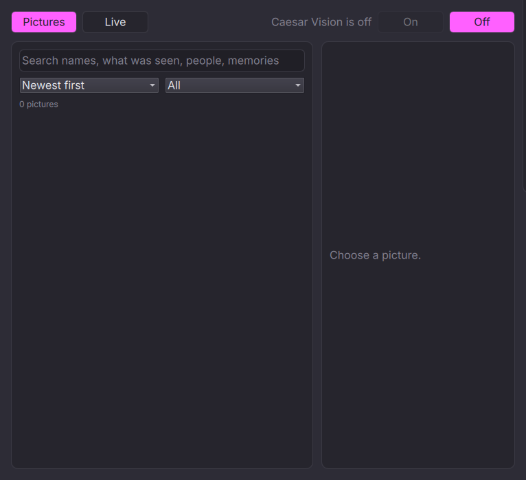
Open Caesar Vision from System Tools. Pictures lists every picture held, Newest first, Oldest first or By name, and shows All, Recent, Kept or People, with a search across names, what was seen, people and memories. Choose a picture to see it: Keep, with a memory keeps it, and Delete takes it away for good once you confirm. Live shows a camera: choose it, then Show live, and Stop. On and Off turn Caesar Vision on and off, and the window says which it is. On a computer with no camera, it says so.
An email link, on a web page or in a program, opens a new message in your own email, ready to write, with its address and subject filled in. The first time you open one, Caesar asks which email you use: Gmail, Outlook or Yahoo Mail, which open in the browser, or a mail program if one is installed. It remembers your choice; to change it, open Email links from the menu. Each account keeps its own choice.
Caesar is a beta. When something does not work as it should, report it, in either of these ways:
[Bug Report], such as Caesar 0.8.32: the panel clock stops [Bug
Report].You can also ask the agent to report a bug for you. It gathers the version, the computer and what shows the fault, shows you what will be sent, and sends it with your email address once you agree.
Every report is answered by email with its own number, such as CB-0001. Keep
the number in the subject when you write about the same report, and include it in the title
on the form to add to a report: what you send is filed with the report it names. Modulatio
may write to you with questions. Email is not instant: the reply can take several minutes,
and if none comes, look in your spam or junk folder before sending the report again.
The AI Harnesses category of the menu holds six entries that open a terminal: Claude Code, Codex, Antigravity, Hermes, OpenCode and Feng TUI. None of them is Caesar. Each runs as you, in your own account, and none holds Caesar's tools or reads its memory. Caesar itself is in the pool, and only there: one mind acts on the computer at a time.
The first five start the program as its maker ships it, with your own sign-in. A program that is not installed for your account asks whether to install it. Answer yes, and the entry fetches it from its maker into your own account and starts it. Nothing is installed for the whole computer. Hermes asks its own questions when it first starts. The copy Caesar fetched for its own seat is a separate one and is not used here, and what the seat is held to does not apply to yours.
Feng TUI here is a conversation with a model that is not Caesar. It uses the
same setup as Caesar's own Feng TUI: the providers set up on this computer and their
keys, the ChatGPT and xAI sign-ins, and this computer's own models with the settings
given to them in the Model Manager. With no choice of your own it uses the model chosen
for the machine. /model chooses another for your own conversations, kept
in ~/.config/feng-tui; it does not change what Caesar uses. A Claude
subscription and Antigravity's Google sign-in are not offered here, as they are not
offered to Feng TUI in the pool. It does not come online, hears nothing spoken at the
desktop, and keeps its conversation in ~/.local/state/feng-tui. An account
that does not administer the computer keeps providers and keys of its own instead.
It has tools of its own: it can read, list and search files, write and edit them, and run commands, all as you. What it may do without asking is narrow:
~/feng-tui, it reads and writes
freely.sudo or one of Caesar's own helpers is always
shown to you first, and can only be allowed once at a time: an account that
administers this computer is let through those without a password. Commands are
run without the providers' keys./approvals shows what is allowed now. /rp takes every
permission back, the kept ones included; they are kept in
~/.config/feng-tui/permissions.json.
The rules for commands are Hermes Agent's, copied as they are. They do
not treat kill or installing programs as dangerous, so those run without a
question. The plain Feng TUI can do whatever your account can do. Give it
work you would give a program you run yourself.
The permission method follows the Leader in Modulatio for files and Hermes Agent, by Nous Research, for commands; Hermes's rules are included under its MIT licence.
Part three — Building Caesar from source
Caesar is compiled from source. It is not based on another distribution, and it does not require a dedicated build system.
The build recipe is a folder of numbered scripts, and the file names determine the order in which they run. All of them are standard shell scripts that you can read.
The recipe is public, with Caesar's own code and its patches, at
gitlab.com/modulatio-labs/modulatio-labs-caesar.
One file is not in that copy: the Linux From Scratch book
(build/book-resolved.xml), which two of the chapters are generated from. Its
licence does not allow it to be republished, so fetch the book, version r13.0-systemd, from
linuxfromscratch.org. The counts below were read from the recipe and the build tree on
2026-11-13.
| Item | Count | Description |
|---|---|---|
| Chapters | 48 | Numbered scripts, read in name order |
| Steps | 563 | One per package or configuration item |
| Sources | 531 | Each with its publisher's checksum |
| Build time | 15.7 h | On 16 cores, from an empty disk, on 2026-09-12 |
| Recorded files | 227,094 | Fingerprinted for system integrity checks |
| Kernel modules | 5,534 | Built to support hardware not yet in use |
make and the ordinary build
tools.No toolchain preparation is required beyond that. The recipe builds its own toolchain and reads nothing else from the build host.
A chapter's number determines where it runs. Chapters below 7 run on the build host; chapters 7 and higher run inside the system being built. A single script handles this automatically, so you run three commands and wait for the build to complete.
cd build CAESAR_LFS=/mnt/lfs ./04-host.sh # creates the tree and the build account ./fetch-sources.sh /mnt/lfs/sources # single download point; every source checksummed setsid nohup env CAESAR_LFS=/mnt/lfs \ ./run-recipe.sh > /dev/null 2>&1 & # runs the full recipe, detached
The last command runs detached, so closing the terminal does not stop the build. To monitor progress, run:
tail -f /mnt/lfs/var/log/caesar-build/recipe.log
If the build stops, it reports the chapter at which it stopped. Resolve the cause, then restart the build at that chapter. Earlier chapters are not repeated:
./run-recipe.sh 21-graphics.sh
Restarting is fast because every step records a fingerprint of its own text. When the recipe runs again, completed steps are skipped. If you change a flag in one step, only that package is rebuilt.
In a measured build, a chapter that took 2 h 25 m on its first run was verified again in 62 seconds.
The following times are measured, not estimated, on the full build of 2026-09-12; what the recipe has gained since is not in them. The browser engine alone comprises 9,451 files and accounts for more than a quarter of the total build time.
The installation media for 0.8.32, caesar-0.8.32.iso, is 5,225,420,800 bytes,
about 5.2 GB. The completed build tree measured 50.6 GB on 2026-11-13.
The difference is not due to compression. More than two thirds of the build tree consists of build host files rather than files of the finished system, and these are excluded.
Run the following command as root on a completed build tree:
tools/build-image.sh /mnt/lfs caesar.iso
Without a file name, the media is named for the version the tree carries, such as
caesar-0.8.32.iso.
The command stops before it begins if the tree contains a key, a password, or any shell history. This ensures that distributed installation media contains no personal data, regardless of who built it.
Compressing the tree takes most of the time: the 0.8.32 media took about eight minutes on 32 processor threads. A media made this way is not signed, and the command says that it cannot make a stick. To make one that Caesar On a Stick accepts, name your repository's private key, and the image is signed with it:
CAESAR_SIGNING_KEY=/path/to/your-key.pem tools/build-image.sh /mnt/lfs
Part four — Known issues
The following issues were observed on an installed system at Caesar 0.8.32, not predicted. You are likely to encounter them.
These issues affect presentation, not function.
These issues are not visible during normal use, but they are the most significant.